Chapter 14: Stress, Lifestyle, and Health¶
Introduction¶
Few would deny that today’s college students are under a lot of pressure. In addition to many usual stresses and strains incidental to the college experience (e.g., exams and term papers), students today are faced with increased college tuitions, burdensome debt, and difficulty finding employment after graduation. A significant population of non-traditional college students may face additional stressors, such as raising children or holding down a full-time job while working toward a degree.
Of course, life is filled with many additional challenges beyond those incurred in college or the workplace. We might have concerns with financial security, difficulties with friends or neighbors, family responsibilities, and we may not have enough time to do the things we want to do. Even minor hassles—losing things, traffic jams, and loss of internet service—all involve pressure and demands that can make life seem like a struggle and that can compromise our sense of well-being. That is, all can be stressful in some way.
Scientific interest in stress, including how we adapt and cope, has been longstanding in psychology; indeed, after nearly a century of research on the topic, much has been learned and many insights have been developed. This chapter examines stress and highlights our current understanding of the phenomenon, including its psychological and physiological natures, its causes and consequences, and the steps we can take to master stress rather than become its victim.
14.1 What Is Stress?¶
Learning Objectives
By the end of this section, you will be able to:
- Differentiate between stimulus-based and response-based definitions of stress
- Define stress as a process
- Differentiate between good stress and bad stress
- Describe the early contributions of Walter Cannon and Hans Selye to the stress research field
- Understand the physiological basis of stress and describe the general adaptation syndrome
The term stress as it relates to the human condition first emerged in scientific literature in the 1930s, but it did not enter the popular vernacular until the 1970s (Lyon, 2012). Today, we often use the term loosely in describing a variety of unpleasant feeling states; for example, we often say we are stressed out when we feel frustrated, angry, conflicted, overwhelmed, or fatigued. Despite the widespread use of the term, stress is a fairly vague concept that is difficult to define with precision.
Researchers have had a difficult time agreeing on an acceptable definition of stress. Some have conceptualized stress as a demanding or threatening event or situation (e.g., a high-stress job, overcrowding, and long commutes to work). Such conceptualizations are known as stimulus-based definitions because they characterize stress as a stimulus that causes certain reactions. Stimulus-based definitions of stress are problematic, however, because they fail to recognize that people differ in how they view and react to challenging life events and situations. For example, a conscientious student who has studied diligently all semester would likely experience less stress during final exams week than would a less responsible, unprepared student.
Others have conceptualized stress in ways that emphasize the physiological responses that occur when faced with demanding or threatening situations (e.g., increased arousal). These conceptualizations are referred to as response-based definitions because they describe stress as a response to environmental conditions. For example, the endocrinologist Hans Selye, a famous stress researcher, once defined stress as the “response of the body to any demand, whether it is caused by, or results in, pleasant or unpleasant conditions” (Selye, 1976, p. 74). Selye’s definition of stress is response-based in that it conceptualizes stress chiefly in terms of the body’s physiological reaction to any demand that is placed on it. Neither stimulus-based nor response-based definitions provide a complete definition of stress. Many of the physiological reactions that occur when faced with demanding situations (e.g., accelerated heart rate) can also occur in response to things that most people would not consider to be genuinely stressful, such as receiving unanticipated good news: an unexpected promotion or raise.
A useful way to conceptualize stress is to view it as a process whereby an individual perceives and responds to events that they appraise as overwhelming or threatening to their well-being (Lazarus & Folkman, 1984). A critical element of this definition is that it emphasizes the importance of how we appraise—that is, judge—demanding or threatening events (often referred to as stressors); these appraisals, in turn, influence our reactions to such events. Two kinds of appraisals of a stressor are especially important in this regard: primary and secondary appraisals. A primary appraisal involves judgment about the degree of potential harm or threat to well-being that a stressor might entail. A stressor would likely be appraised as a threat if one anticipates that it could lead to some kind of harm, loss, or other negative consequence; conversely, a stressor would likely be appraised as a challenge if one believes that it carries the potential for gain or personal growth. For example, an employee who is promoted to a leadership position would likely perceive the promotion as a much greater threat if they believed the promotion would lead to excessive work demands than if they viewed it as an opportunity to gain new skills and grow professionally. Similarly, a college student on the cusp of graduation may face the change as a threat or a challenge (Figure 14.2).
The perception of a threat triggers a secondary appraisal: judgment of the options available to cope with a stressor, as well as perceptions of how effective such options will be (Lyon, 2012) (Figure 14.3). As you may recall from what you learned about self-efficacy, an individual’s belief in their ability to complete a task is important (Bandura, 1994). A threat tends to be viewed as less catastrophic if one believes something can be done about it (Lazarus & Folkman, 1984). Imagine that two middle-aged people, Robin and Madhuri, perform breast self-examinations one morning and each notices a lump on the lower region of their left breast. Although both view the breast lump as a potential threat (primary appraisal), their secondary appraisals differ considerably. In considering the breast lump, some of the thoughts racing through Robin’s mind are, “Oh my God, I could have breast cancer! What if the cancer has spread to the rest of my body and I cannot recover? What if I have to go through chemotherapy? I’ve heard that experience is awful! What if I have to quit my job? My partner and I won’t have enough money to pay the mortgage. Oh, this is just horrible…I can’t deal with it!” On the other hand, Madhuri thinks, “Hmm, this may not be good. Although most times these things turn out to be benign, I need to have it checked out. If it turns out to be breast cancer, there are doctors who can take care of it because the medical technology today is quite advanced. I’ll have a lot of different options, and I’ll be just fine.” Clearly, Robin and Madhuri have different outlooks on what might turn out to be a very serious situation: Robin seems to think that little could be done about it, whereas Madhuri believes that, worst case scenario, a number of options that are likely to be effective would be available. As such, Robin would clearly experience greater stress than would Madhuri.
![A concept map begins with a box titled “Stressor” at the top with an arrow underneath that leads to a box labeled “Primary appraisal: challenge or threat?” Below “Primary appraisal: challenge or threat?” is a line leading to the word “challenge” on the left side and “threat” on the right side. Below the word “challenge” is a box labeled “Potential for gain or growth.” There are no additional lines, arrows, or boxes under “Potential for gain or growth.” Below the word “threat,” there is a box labeled “May lead to harm, loss, or negative consequences.” Underneath the box, there is an arrow leading to another box labeled “Secondary appraisal: potential options and how effective?” The box has a line underneath that leads to the words “effective option” on the left side and “ineffective/no option” on the right side. Below the words “effective option,” there is an arrow leading to a box labeled “Low threat.” Below the words “ineffective/no option,” there is an arrow leading to a box labeled “High threat.”](img/cnx-psych-14-01-appraisals.webp)
To be sure, some stressors are inherently more stressful than others in that they are more threatening and leave less potential for variation in cognitive appraisals (e.g., objective threats to one’s health or safety). Nevertheless, appraisal will still play a role in augmenting or diminishing our reactions to such events (Everly & Lating, 2002).
If a person appraises an event as harmful and believes that the demands imposed by the event exceed the available resources to manage or adapt to it, the person will subjectively experience a state of stress. In contrast, if one does not appraise the same event as harmful or threatening, she is unlikely to experience stress. According to this definition, environmental events trigger stress reactions by the way they are interpreted and the meanings they are assigned. In short, stress is largely in the eye of the beholder: it’s not so much what happens to you as it is how you respond (Selye, 1976).
Good Stress?¶
Although stress carries a negative connotation, at times it may be of some benefit. Stress can motivate us to do things in our best interests, such as study for exams, visit the doctor regularly, exercise, and perform to the best of our ability at work. Indeed, Selye (1974) pointed out that not all stress is harmful. He argued that stress can sometimes be a positive, motivating force that can improve the quality of our lives. This kind of stress, which Selye called eustress (from the Greek eu = “good”), is a good kind of stress associated with positive feelings, optimal health, and performance. A moderate amount of stress can be beneficial in challenging situations. For example, athletes may be motivated and energized by pregame stress, and students may experience similar beneficial stress before a major exam. Indeed, research shows that moderate stress can enhance both immediate and delayed recall of educational material. Participants in one study who memorized a scientific text passage showed improved memory of the passage immediately after exposure to a mild stressor as well as one day following exposure to the stressor (Hupbach & Fieman, 2012).
Increasing one’s level of stress will cause performance to change in a predictable way. As shown in Figure 14.4, as stress increases, so do performance and general well-being (eustress); when stress levels reach an optimal level (the highest point of the curve), performance reaches its peak. A person at this stress level is colloquially at the top of their game, meaning they feel fully energized, focused, and can work with minimal effort and maximum efficiency. But when stress exceeds this optimal level, it is no longer a positive force—it becomes excessive and debilitating, or what Selye termed distress (from the Latin dis = “bad”). People who reach this level of stress feel burned out; they are fatigued, exhausted, and their performance begins to decline. If the stress remains excessive, health may begin to erode as well (Everly & Lating, 2002). A good example of distress is severe test anxiety. When students are feeling very stressed about a test, negative emotions combined with physical symptoms may make concentration difficult, thereby negatively affecting test scores.
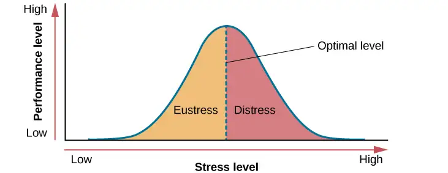
The Prevalence of Stress¶
Stress is everywhere and, as shown in Figure 14.5, it has been on the rise over the last several years. Each of us is acquainted with stress—some are more familiar than others. In many ways, stress feels like a load you just can’t carry—a feeling you experience when, for example, you have to drive somewhere in a blizzard, when you wake up late the morning of an important job interview, when you run out of money before the next pay period, and before taking an important exam for which you realize you are not fully prepared.
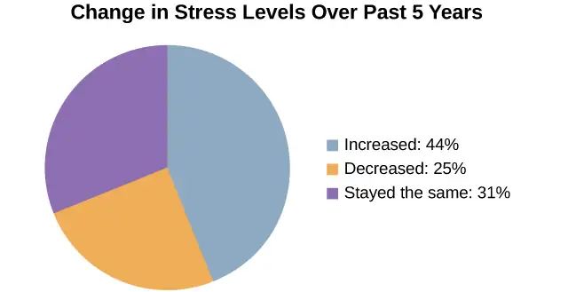
Stress is an experience that evokes a variety of responses, including those that are physiological (e.g., accelerated heart rate, headaches, or gastrointestinal problems), cognitive (e.g., difficulty concentrating or making decisions), and behavioral (e.g., drinking alcohol, smoking, or taking actions directed at eliminating the cause of the stress). Although stress can be positive at times, it can have deleterious health implications, contributing to the onset and progression of a variety of physical illnesses and diseases (Cohen & Herbert, 1996).
The scientific study of how stress and other psychological factors impact health falls within the realm of health psychology, a subfield of psychology devoted to understanding the importance of psychological influences on health, illness, and how people respond when they become ill (Taylor, 1999). Health psychology emerged as a discipline in the 1970s, a time during which there was increasing awareness of the role behavioral and lifestyle factors play in the development of illnesses and diseases (Straub, 2007). In addition to studying the connection between stress and illness, health psychologists investigate issues such as why people make certain lifestyle choices (e.g., smoking or eating unhealthy food despite knowing the potential adverse health implications of such behaviors). Health psychologists also design and investigate the effectiveness of interventions aimed at changing unhealthy behaviors. Perhaps one of the more fundamental tasks of health psychologists is to identify which groups of people are especially at risk for negative health outcomes, based on psychological or behavioral factors. For example, measuring differences in stress levels among demographic groups and how these levels change over time can help identify populations who may have an increased risk for illness or disease.
Figure 14.6 depicts the results of three national surveys in which several thousand individuals from different demographic groups completed a brief stress questionnaire; the surveys were administered in 1983, 2006, and 2009 (Cohen & Janicki-Deverts, 2012). All three surveys demonstrated higher stress in women than in men. Unemployed individuals reported high levels of stress in all three surveys, as did those with less education and income; retired persons reported the lowest stress levels. However, from 2006 to 2009 the greatest increase in stress levels occurred among men, Hispanic people aged 45–64, college graduates, and those with full-time employment. One interpretation of these findings is that concerns surrounding the 2008–2009 economic downturn (e.g., threat of or actual job loss and substantial loss of retirement savings) may have been especially stressful to college-educated employed men with limited time remaining in their working careers.
![Graphs a through f show mean stress scores in 1983, 2006, and 2009, and how they have been impacted by different factors. Graph a shows the relationship between mean stress score and sex. The mean stress score for men steadily increased from 12 in 1983 to a little over 14 in 2006 to a little over 15 in 2009. The mean stress score for women increased rapidly from a little under 13 in 1983 to 16 in 2006 and remained the same in 2009. The graph indicates that the mean stress score for women is higher than the mean stress score for men overall. Graph b shows the relationship between mean stress score and age. The mean stress scores for people under 25 years old increased from a little over 14 in 1983 to a little over 18 in 2006, and then decreased to 17 in 2009. The mean stress scores for people 25 to 34 years old increased from a little under 14 in 1983 to 18 in 2006, then decreased to a little over 16 in 2009. The mean stress scores for people 35–44 years old increased from 13 in 1983 to a little under 17 in 2006, then decreased to a little over 16 in 2009. The mean stress scores for people 45–54 years old from a little under 13 in 1983 to 15 in 2006, then increased to a little under 17 in 2009. The mean stress scores for people 55–64 years old steadily increased from 12 in 1983 to a little over 13 in 2006 to a little over 14 in 2009. The mean stress scores for people 65 years old or older decreased from 12 in 1983 to a little under 11 in 2006, then slightly increased to 11 in 2009. Graph c shows the relationship between mean stress score and race. The mean stress scores for White people steadily increased from a little under 13 in 1983 to 15 in 2006 to a little over 15 in 2009. The mean stress scores for Black people increased from a little over 15 in 1983 to a little over 16 in 2006, then slightly decreased to a little over 15 in 2009. The mean stress scores for Hispanic people steadily increased from 14 in 1983 to a little under 16 in 2006 to 17 in 2009. The mean stress score for people classified as “Other” increased from 14 in 1983 to a little over 17 in 2006 where it remained. Graph d shows the relationship between mean stress scores and education. The mean stress scores for those with less than a high school education steadily increased from a little over 14 in 1983 to a little over 17 in 2006 to 19 in 2009. The mean stress scores for those with a high school education increased from 12 in 1983 to a little over 16 in 2006 and remained the same in 2009. The mean stress scores for those with some college education increased from 12 in 1983 to a little over 15 in 2006, then slightly increased to a little under 16 in 2009. The mean stress scores for those with a bachelor’s degree steadily increased from 12 in 1983 to a little over 13 in 2006 to 15 in 2009. The mean stress scores for those with advanced degrees also steadily increased, from a little over 11 in 1983 to 13 in 2006 to a little under 15 in 2009. Graph e shows the relationship between mean stress scores and employment status. The mean stress scores for those with full time employment status steadily increased from a little over 12 in 1983 to 15 in 2006 to 16 in 2009. The mean stress scores for those with part time employment status increased from 14 in 1983 to 16 in 2006, then decreased to 15 in 2009.The mean stress scores for those who were unemployed rapidly increased from a little over 16 in 1983 to 20 in 2006, then decreased back to a little over 16 in 2009. The mean stress scores for those who were retired remained lower than the other groups, remaining at a little under 12 in 1983 and 2006, then slightly increasing to a little over 12 in 2009. Graph f shows the relationship between the mean stress score and income in U.S. dollars. The mean stress scores for those with an income of $25,000 or lower steadily increased from a little over 15 in 1983 to 17 in 2006 to a little under 18 in 2009. The mean stress scores for those with an income of $25,001 to $35,000 steadily increased from 14 in 1983 to 16 in 2006 to a little under 17 in 2009. The mean stress scores for those with an income of $35,001–$50,000 steadily increased from a little under 13 in 1983 to a little over 15 in 2006 to a little over 16 in 2009. The mean stress scores for those with an income of $50,001–$75,000 increased rapidly from 12 in 1983 to a little under 15 in 2006, then slightly increased to a little over 15 in 2009. The mean stress scores for those with an income of $75,001 or more steadily increased from 12 in 1983 to a little under 13 in 2006 to a little over 14 in 2009.](img/cnx-psych-14-01-stresslev.webp)
Early Contributions to the Study of Stress¶
As previously stated, scientific interest in stress goes back nearly a century. One of the early pioneers in the study of stress was Walter Cannon, an eminent American physiologist at Harvard Medical School (Figure 14.7). In the early part of the 20th century, Cannon was the first to identify the body’s physiological reactions to stress.
Cannon and the Fight-or-Flight Response¶
Imagine that you are hiking in the beautiful mountains of Colorado on a warm and sunny spring day. At one point during your hike, a large, frightening-looking black bear appears from behind a stand of trees and sits about 50 yards from you. The bear notices you, sits up, and begins to lumber in your direction. In addition to thinking, “This is definitely not good,” a constellation of physiological reactions begins to take place inside you. Prompted by a deluge of epinephrine (adrenaline) and norepinephrine (noradrenaline) from your adrenal glands, your pupils begin to dilate. Your heart starts to pound and speeds up, you begin to breathe heavily and perspire, you get butterflies in your stomach, and your muscles become tense, preparing you to take some kind of direct action. Cannon proposed that this reaction, which he called the fight-or-flight response, occurs when a person experiences very strong emotions—especially those associated with a perceived threat (Cannon, 1932). During the fight-or-flight response, the body is rapidly aroused by activation of both the sympathetic nervous system and the endocrine system (Figure 14.8). This arousal helps prepare the person to either fight or flee from a perceived threat.
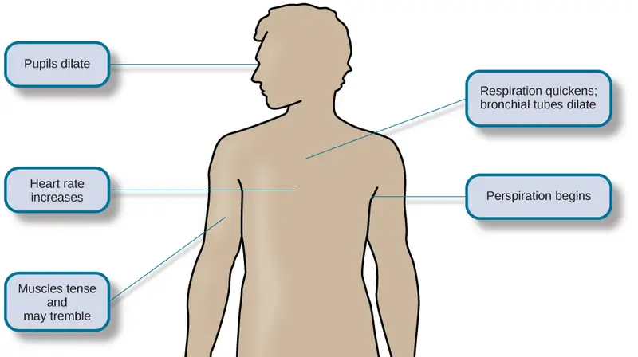
According to Cannon, the fight-or-flight response is a built-in mechanism that assists in maintaining homeostasis—an internal environment in which physiological variables such as blood pressure, respiration, digestion, and temperature are stabilized at levels optimal for survival. Thus, Cannon viewed the fight-or-flight response as adaptive because it enables people to adjust internally and externally to threats in their environment, allowing them to continue to be alive and overcome the threat.
Selye and the General Adaptation Syndrome¶
Another important early contributor to the stress field was Hans Selye, mentioned earlier. He would eventually become one of the world’s foremost experts in the study of stress (Figure 14.9). As a young assistant in the biochemistry department at McGill University in the 1930s, Selye was engaged in research involving sex hormones in rats. Although he was unable to find an answer for what he was initially researching, he incidentally discovered that when exposed to prolonged negative stimulation (stressors)—such as extreme cold, surgical injury, excessive muscular exercise, and shock—the rats showed signs of adrenal enlargement, thymus and lymph node shrinkage, and stomach ulceration. Selye realized that these responses were triggered by a coordinated series of physiological reactions that unfold over time during continued exposure to a stressor. These physiological reactions were nonspecific, which means that regardless of the type of stressor, the same pattern of reactions would occur. What Selye discovered was the general adaptation syndrome, the body’s nonspecific physiological response to stress.
The general adaptation syndrome, shown in Figure 14.10, consists of three stages: (1) alarm reaction, (2) stage of resistance, and (3) stage of exhaustion (Selye, 1936; 1976). Alarm reaction describes the body’s immediate reaction upon facing a threatening situation or emergency, and it is roughly analogous to the fight-or-flight response described by Cannon. During an alarm reaction, you are alerted to a stressor, and your body alarms you with a cascade of physiological reactions that provide you with the energy to manage the situation. A person who wakes up in the middle of the night to discover her house is on fire, for example, is experiencing an alarm reaction.
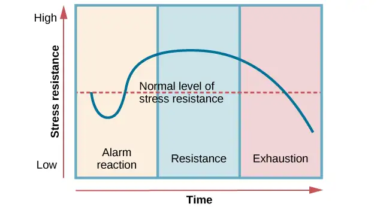
If exposure to a stressor is prolonged, the organism will enter the stage of resistance. During this stage, the initial shock of alarm reaction has worn off and the body has adapted to the stressor. Nevertheless, the body also remains on alert and is prepared to respond as it did during the alarm reaction, although with less intensity. For example, suppose a child who went missing is still missing 72 hours later. Although the parents would obviously remain extremely disturbed, the magnitude of physiological reactions would likely have diminished over the 72 intervening hours due to some adaptation to this event.
If exposure to a stressor continues over a longer period of time, the stage of exhaustion ensues. At this stage, the person is no longer able to adapt to the stressor: the body’s ability to resist becomes depleted as physical wear takes its toll on the body’s tissues and organs. As a result, illness, disease, and other permanent damage to the body—even death—may occur. If a missing child still remained missing after three months, the long-term stress associated with this situation may cause a parent to literally faint with exhaustion at some point or even to develop a serious and irreversible illness.
In short, Selye’s general adaptation syndrome suggests that stressors tax the body via a three-phase process—an initial jolt, subsequent readjustment, and a later depletion of all physical resources—that ultimately lays the groundwork for serious health problems and even death. It should be pointed out, however, that this model is a response-based conceptualization of stress, focusing exclusively on the body’s physical responses while largely ignoring psychological factors such as appraisal and interpretation of threats. Nevertheless, Selye’s model has had an enormous impact on the field of stress because it offers a general explanation for how stress can lead to physical damage and, thus, disease. As we shall discuss later, prolonged or repeated stress has been implicated in development of a number of disorders such as hypertension and coronary artery disease.
The Physiological Basis of Stress¶
What goes on inside our bodies when we experience stress? The physiological mechanisms of stress are extremely complex, but they generally involve the work of two systems—the sympathetic nervous system and the hypothalamic-pituitary-adrenal (HPA) axis. When a person first perceives something as stressful (Selye’s alarm reaction), the sympathetic nervous system triggers arousal via the release of adrenaline from the adrenal glands. Release of these hormones activates the fight-or-flight responses to stress, such as accelerated heart rate and respiration. At the same time, the HPA axis, which is primarily endocrine in nature, becomes especially active, although it works much more slowly than the sympathetic nervous system. In response to stress, the hypothalamus (one of the limbic structures in the brain) releases corticotropin-releasing factor, a hormone that causes the pituitary gland to release adrenocorticotropic hormone (ACTH) (Figure 14.11). The ACTH then activates the adrenal glands to secrete a number of hormones into the bloodstream; an important one is cortisol, which can affect virtually every organ within the body. Cortisol is commonly known as a stress hormone and helps provide that boost of energy when we first encounter a stressor, preparing us to run away or fight. However, sustained elevated levels of cortisol weaken the immune system.
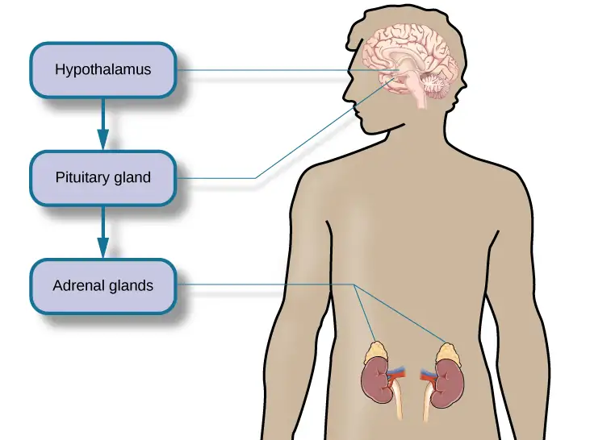
In short bursts, this process can have some favorable effects, such as providing extra energy, improving immune system functioning temporarily, and decreasing pain sensitivity. However, extended release of cortisol—as would happen with prolonged or chronic stress—often comes at a high price. High levels of cortisol have been shown to produce a number of harmful effects. For example, increases in cortisol can significantly weaken our immune system (Glaser & Kiecolt-Glaser, 2005), and high levels are frequently observed among depressed individuals (Geoffroy, Hertzman, Li, & Power, 2013). In summary, a stressful event causes a variety of physiological reactions that activate the adrenal glands, which in turn release epinephrine, norepinephrine, and cortisol. These hormones affect a number of bodily processes in ways that prepare the stressed person to take direct action, but also in ways that may heighten the potential for illness.
When stress is extreme or chronic, it can have profoundly negative consequences. For example, stress often contributes to the development of certain psychological disorders, including post-traumatic stress disorder, major depressive disorder, and other serious psychiatric conditions. Additionally, we noted earlier that stress is linked to the development and progression of a variety of physical illnesses and diseases. For example, researchers in one study found that people injured during the September 11, 2001, World Trade Center disaster or who developed post-traumatic stress symptoms afterward later suffered significantly elevated rates of heart disease (Jordan, Miller-Archie, Cone, Morabia, & Stellman, 2011). Another investigation yielded that self-reported stress symptoms among aging and retired Finnish food industry workers were associated with morbidity 11 years later. This study also predicted the onset of musculoskeletal, nervous system, and endocrine and metabolic disorders (Salonen, Arola, Nygård, & Huhtala, 2008). Another study reported that male South Korean manufacturing employees who reported high levels of work-related stress were more likely to catch the common cold over the next several months than were those employees who reported lower work-related stress levels (Park et al., 2011). Later, you will explore the mechanisms through which stress can produce physical illness and disease.
14.2 Stressors¶
Learning Objectives
By the end of this section, you will be able to:
- Describe different types of possible stressors
- Explain the importance of life changes as potential stressors
- Describe the Social Readjustment Rating Scale
- Understand the concepts of job strain and job burnout
For an individual to experience stress, they must first encounter a potential stressor. In general, stressors can be placed into one of two broad categories: chronic and acute. Chronic stressors include events that persist over an extended period of time, such as caring for a parent with dementia, long-term unemployment, or imprisonment. Acute stressors involve brief focal events that sometimes continue to be experienced as overwhelming well after the event has ended, such as falling on an icy sidewalk and breaking your leg (Cohen, Janicki-Deverts, & Miller, 2007). Whether chronic or acute, potential stressors come in many shapes and sizes. They can include major traumatic events, significant life changes, daily hassles, as well as other situations in which a person is regularly exposed to threat, challenge, or danger.
Traumatic Events¶
Some stressors involve traumatic events or situations in which a person is exposed to actual or threatened death or serious injury. Stressors in this category include exposure to military combat, threatened or actual physical assaults (e.g., physical attacks, sexual assault, robbery, childhood abuse), terrorist attacks, natural disasters (e.g., earthquakes, floods, hurricanes), and automobile accidents. Men, non-White people, and individuals in lower socioeconomic status (SES) groups report experiencing a greater number of traumatic events than do women, White people, and individuals in higher SES groups (Hatch & Dohrenwend, 2007). Some individuals who are exposed to stressors of extreme magnitude develop post-traumatic stress disorder (PTSD): a chronic stress reaction characterized by experiences and behaviors that may include intrusive and painful memories of the stressor event, jumpiness, persistent negative emotional states, detachment from others, angry outbursts, and avoidance of reminders of the event (American Psychiatric Association [APA], 2013).
Life Changes¶
Most stressors that we encounter are not nearly as intense as the ones described above. Many potential stressors we face involve events or situations that require us to make changes in our ongoing lives and require time as we adjust to those changes. Examples include death of a close family member, marriage, divorce, and moving (Figure 14.12).
In the 1960s, psychiatrists Thomas Holmes and Richard Rahe wanted to examine the link between life stressors and physical illness, based on the hypothesis that life events requiring significant changes in a person’s normal life routines are stressful, whether these events are desirable or undesirable. They developed the Social Readjustment Rating Scale (SRRS), consisting of 43 life events that require varying degrees of personal readjustment (Holmes & Rahe, 1967). Many life events that most people would consider pleasant (e.g., holidays, retirement, marriage) are among those listed on the SRRS; these are examples of eustress. Holmes and Rahe also proposed that life events can add up over time, and that experiencing a cluster of stressful events increases one’s risk of developing physical illnesses.
In developing their scale, Holmes and Rahe asked 394 participants to provide a numerical estimate for each of the 43 items; each estimate corresponded to how much readjustment participants felt each event would require. These estimates resulted in mean value scores for each event—often called life change units (LCUs) (Rahe, McKeen, & Arthur, 1967). The numerical scores ranged from 11 to 100, representing the perceived magnitude of life change each event entails. Death of a spouse ranked highest on the scale with 100 LCUs, and divorce ranked second highest with 73 LCUs. In addition, personal injury or illness, marriage, and job termination also ranked highly on the scale with 53, 50, and 47 LCUs, respectively. Conversely, change in residence (20 LCUs), change in eating habits (15 LCUs), and vacation (13 LCUs) ranked low on the scale (Table 14.1). Minor violations of the law ranked the lowest with 11 LCUs. To complete the scale, participants checked yes for events experienced within the last 12 months. LCUs for each checked item are totaled for a score quantifying the amount of life change. Agreement on the amount of adjustment required by the various life events on the SRRS is highly consistent, even cross-culturally (Holmes & Masuda, 1974).
Table 14.1
| Some Stressors on the Social Readjustment Rating Scale (Holmes & Rahe, 1967) | |
|---|---|
| Life event | Life change units |
| Death of a close family member | 63 |
| Personal injury or illness | 53 |
| Dismissal from work | 47 |
| Change in financial state | 38 |
| Change to different line of work | 36 |
| Outstanding personal achievement | 28 |
| Beginning or ending school | 26 |
| Change in living conditions | 25 |
| Change in working hours or conditions | 20 |
| Change in residence | 20 |
| Change in schools | 20 |
| Change in social activities | 18 |
| Change in sleeping habits | 16 |
| Change in eating habits | 15 |
| Minor violation of the law | 11 |
Extensive research has demonstrated that accumulating a high number of life change units within a brief period of time (one or two years) is related to a wide range of physical illnesses (even accidents and athletic injuries) and mental health problems (Monat & Lazarus, 1991; Scully, Tosi, & Banning, 2000). In an early demonstration, researchers obtained LCU scores for U.S. and Norwegian Navy personnel who were about to embark on a six-month voyage. A later examination of medical records revealed positive (but small) correlations between LCU scores prior to the voyage and subsequent illness symptoms during the ensuing six-month journey (Rahe, 1974). In addition, people tend to experience more physical symptoms, such as backache, upset stomach, diarrhea, and acne, on specific days in which self-reported LCU values are considerably higher than normal, such as the day of a family member’s wedding (Holmes & Holmes, 1970).
The Social Readjustment Rating Scale (SRRS) provides researchers a simple, easy-to-administer way of assessing the amount of stress in people’s lives, and it has been used in hundreds of studies (Thoits, 2010). Despite its widespread use, the scale has been subject to criticism. First, many of the items on the SRRS are vague; for example, death of a close friend could involve the death of a long-absent childhood friend that requires little social readjustment (Dohrenwend, 2006). In addition, some have challenged its assumption that undesirable life events are no more stressful than desirable ones (Derogatis & Coons, 1993). However, most of the available evidence suggests that, at least as far as mental health is concerned, undesirable or negative events are more strongly associated with poor outcomes (such as depression) than are desirable, positive events (Hatch & Dohrenwend, 2007). Perhaps the most serious criticism is that the scale does not take into consideration respondents’ appraisals of the life events it contains. As you recall, appraisal of a stressor is a key element in the conceptualization and overall experience of stress. Being fired from work may be devastating to some but a welcome opportunity to obtain a better job for others. The SRRS remains one of the most well-known instruments in the study of stress, and it is a useful tool for identifying potential stress-related health outcomes (Scully et al., 2000).
Link to Learning
Go to this site and complete the SRRS scale to determine the total number of LCUs you have experienced over the last year.
Connect the Concepts: Correlational Research
The Holmes and Rahe Social Readjustment Rating Scale (SRRS) uses the correlational research method to identify the connection between stress and health. That is, respondents’ LCU scores are correlated with the number or frequency of self-reported symptoms indicating health problems. These correlations are typically positive—as LCU scores increase, the number of symptoms increase. Consider all the thousands of studies that have used this scale to correlate stress and illness symptoms: If you were to assign an average correlation coefficient to this body of research, what would be your best guess? How strong do you think the correlation coefficient would be? Why can’t the SRRS show a causal relationship between stress and illness? If it were possible to show causation, do you think stress causes illness or illness causes stress?
Hassles¶
Potential stressors do not always involve major life events. Daily hassles—the minor irritations and annoyances that are part of our everyday lives (e.g., rush hour traffic, lost keys, obnoxious coworkers, inclement weather, arguments with friends or family)—can build on one another and leave us just as stressed as life change events (Figure 14.13) (Kanner, Coyne, Schaefer, & Lazarus, 1981).
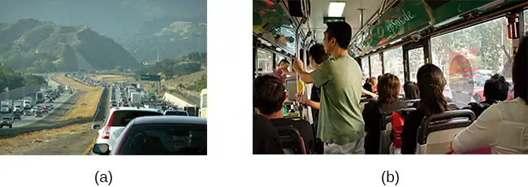
Researchers have demonstrated that the frequency of daily hassles is actually a better predictor of both physical and psychological health than are life change units. In a well-known study of San Francisco residents, the frequency of daily hassles was found to be more strongly associated with physical health problems than were life change events (DeLongis, Coyne, Dakof, Folkman, & Lazarus, 1982). In addition, daily minor hassles, especially interpersonal conflicts, often lead to negative and distressed mood states (Bolger, DeLongis, Kessler, & Schilling, 1989). Cyber hassles that occur on social media may represent a modern and evolving source of stress. In one investigation, social media stress was tied to loss of sleep in adolescents, presumably because ruminating about social media caused a physiological stress response that increased arousal (van der Schuur, Baumgartner, & Sumter, 2018). Clearly, daily hassles can add up and take a toll on us both emotionally and physically.
Occupation-Related Stressors¶
Stressors can include situations in which one is frequently exposed to challenging and unpleasant events, such as difficult, demanding, or unsafe working conditions. Although most jobs and occupations can at times be demanding, some are clearly more stressful than others (Figure 14.14). For example, most people would likely agree that a firefighter’s work is inherently more stressful than that of a florist. Equally likely, most would agree that jobs containing various unpleasant elements, such as those requiring exposure to loud noise (heavy equipment operator), constant harassment and threats of physical violence (prison guard), perpetual frustration (bus driver in a major city), or those mandating that an employee work alternating day and night shifts (hotel desk clerk), are much more demanding—and thus, more stressful—than those that do not contain such elements. Table 14.2 lists several occupations and some of the specific stressors associated with those occupations (Sulsky & Smith, 2005).
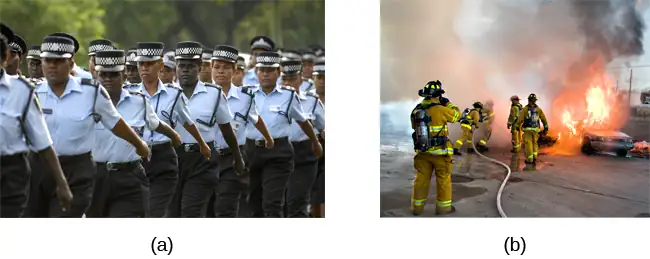
Table 14.2
| Occupations and Their Related Stressors | |
|---|---|
| Occupation | Stressors Specific to Occupation |
| Police officer | physical dangers, excessive paperwork, dealing with court system, tense interactions, life-and-death decision making |
| Firefighter | uncertainty over whether a serious fire or hazard awaits after an alarm, potential for extreme physical danger |
| Social worker | little positive feedback from jobs or from the public, unsafe work environments, frustration in dealing with bureaucracy, excessive paperwork, sense of personal responsibility for clients, work overload |
| Teacher | Excessive paperwork, lack of adequate supplies or facilities, work overload, lack of positive feedback, threat of physical violence, lack of support from parents and administrators |
| Nurse | Work overload, heavy physical work, patient concerns (dealing with death and medical concerns), interpersonal problems with other medical staff (especially physicians) |
| Emergency medical worker | Unpredictable and extreme nature of the job, inexperience |
| Clerical and secretarial work | Few opportunities for advancement, unsupportive supervisors, work overload, lack of perceived control |
| Managerial work | Work overload, conflict and ambiguity in defining the managerial role, difficult work relationships |
Although the specific stressors for these occupations are diverse, they seem to share some common denominators such as heavy workload and uncertainty about and lack of control over certain aspects of a job. Chronic occupational stress contributes to job strain, a work situation that combines excessive job demands and workload with little discretion in decision making or job control (Karasek & Theorell, 1990). Clearly, many occupations other than the ones listed in Table 14.2 involve at least a moderate amount of job strain in that they often involve heavy workloads and little job control (e.g., inability to decide when to take breaks). Such jobs are often low-status and include those of factory workers, postal clerks, supermarket cashiers, taxi drivers, and short-order cooks. Job strain can have adverse consequences on both physical and mental health; it has been shown to be associated with increased risk of hypertension (Schnall & Landsbergis, 1994), heart attacks (Theorell et al., 1998), recurrence of heart disease after a first heart attack (Aboa-Éboulé et al., 2007), significant weight loss or gain (Kivimäki et al., 2006), and major depressive disorder (Stansfeld, Shipley, Head, & Fuhrer, 2012). A longitudinal study of over 10,000 British civil servants reported that workers under 50 years old who earlier had reported high job strain were 68% more likely to later develop heart disease than were those workers under 50 years old who reported little job strain (Chandola et al., 2008).
Some people who are exposed to chronically stressful work conditions can experience job burnout, which is a general sense of emotional exhaustion and cynicism in relation to one’s job (Maslach & Jackson, 1981). Job burnout occurs frequently among those in human service jobs (e.g., social workers, teachers, therapists, and police officers). Job burnout consists of three dimensions. The first dimension is exhaustion—a sense that one’s emotional resources are drained or that one is at the end of their rope and has nothing more to give at a psychological level. Second, job burnout is characterized by depersonalization: a sense of emotional detachment between the worker and the recipients of their services, often resulting in callous, cynical, or indifferent attitudes toward these individuals. Third, job burnout is characterized by diminished personal accomplishment, which is the tendency to evaluate one’s work negatively by, for example, experiencing dissatisfaction with one’s job-related accomplishments or feeling as though one has categorically failed to influence others’ lives through one’s work.
Job strain appears to be one of the greatest risk factors leading to job burnout, which is most commonly observed in workers who are older (ages 55–64), unmarried, and whose jobs involve manual labor. Heavy alcohol consumption, physical inactivity, being overweight, and having a physical or lifetime mental disorder are also associated with job burnout (Ahola, et al., 2006). In addition, depression often co-occurs with job burnout. One large-scale study of over 3,000 Finnish employees reported that half of the participants with severe job burnout had some form of depressive disorder (Ahola et al., 2005). Job burnout is often precipitated by feelings of having invested considerable energy, effort, and time into one’s work while receiving little in return (e.g., little respect or support from others or low pay) (Tatris, Peeters, Le Blanc, Schreurs, & Schaufeli, 2001).
As an illustration, consider Tyre, a nursing assistant who worked in a nursing home. Tyre worked long hours for little pay in a difficult facility. Tyre's supervisor was domineering, unpleasant, and unsupportive, as well as disrespectful of Tyre's personal time, frequently informing them at the last minute they must work several additional hours after their shift ended or report to work on weekends. Tyre had very little autonomy at work. They had little input in day-to-day duties and how to perform them, and was not permitted to take breaks unless explicitly told by their supervisor. Tyre did not feel as though their hard work was appreciated, either by supervisory staff or by the residents of the home. Tyre was very unhappy over the low pay, and felt that many of the residents treated them disrespectfully.
After several years, Tyre began to hate their job. Tyre dreaded going to work in the morning, and gradually developed a callous, hostile attitude toward many of the residents. Eventually, they began to feel they could no longer help the nursing home residents. Tyre’s absenteeism from work increased, and one day they decided that they had had enough and quit. Tyre now has a job in sales, vowing never to work in nursing again.
Link to Learning
Watch this clip from the 1999 comedy Office Space for a humorous illustration of lack of supervisory support in which a sympathetic character’s insufferable boss makes a last-minute demand that he “go ahead and come in” to the office on both Saturday and Sunday.
Finally, our close relationships with friends and family—particularly the negative aspects of these relationships—can be a potent source of stress. Negative aspects of close relationships can include conflicts such as disagreements or arguments, lack of emotional support or confiding, and lack of reciprocity. All of these can be overwhelming, threatening to the relationship, and thus stressful. Such stressors can take a toll both emotionally and physically. A longitudinal investigation of over 9,000 British civil servants found that those who at one point had reported the highest levels of negative interactions in their closest relationship were 34% more likely to experience serious heart problems (fatal or nonfatal heart attacks) over a 13–15 year period, compared to those who experienced the lowest levels of negative interaction (De Vogli, Chandola & Marmot, 2007).
14.3 Stress and Illness¶
Learning Objectives
By the end of this section, you will be able to:
- Explain the nature of psychophysiological disorders
- Describe the immune system and how stress impacts its functioning
- Describe how stress and emotional factors can lead to the development and exacerbation of cardiovascular disorders, asthma, and tension headaches
In this section, we will discuss stress and illness. As stress researcher Robert Sapolsky (1998) describes,
stress-related disease emerges, predominantly, out of the fact that we so often activate a physiological system that has evolved for responding to acute physical emergencies, but we turn it on for months on end, worrying about mortgages, relationships, and promotions. (p. 6)
The stress response, as noted earlier, consists of a coordinated but complex system of physiological reactions that are called upon as needed. These reactions are beneficial at times because they prepare us to deal with potentially dangerous or threatening situations (for example, recall our old friend, the fearsome bear on the trail). However, health is affected when physiological reactions are sustained, as can happen in response to ongoing stress.
Psychophysiological Disorders¶
If the reactions that compose the stress response are chronic or if they frequently exceed normal ranges, they can lead to cumulative wear and tear on the body, in much the same way that running your air conditioner on full blast all summer will eventually cause wear and tear on it. For example, the high blood pressure that a person under considerable job strain experiences might eventually take a toll on their heart and set the stage for a heart attack or heart failure. Also, someone exposed to high levels of the stress hormone cortisol might become vulnerable to infection or disease because of weakened immune system functioning (McEwen, 1998).
Link to Learning
Neuroscientists Robert Sapolsky and Carol Shively have conducted extensive research on stress in non-human primates for over 30 years. Both have shown that position in the social hierarchy predicts stress, mental health status, and disease. Their research sheds light on how stress may lead to negative health outcomes for stigmatized or ostracized people. Here are two videos featuring Dr. Sapolsky: one is regarding killer stress and the other is an excellent in-depth documentary from National Geographic.
Physical disorders or diseases whose symptoms are brought about or worsened by stress and emotional factors are called psychophysiological disorders. The physical symptoms of psychophysiological disorders are real and they can be produced or exacerbated by psychological factors (hence the psycho and physiological in psychophysiological). A list of frequently encountered psychophysiological disorders is provided in Table 14.3.
Table 14.3
| Types of Psychophysiological Disorders (adapted from Everly & Lating, 2002) | |
|---|---|
| Type of Psychophysiological Disorder | Examples |
| Cardiovascular | hypertension, coronary heart disease |
| Gastrointestinal | irritable bowel syndrome |
| Respiratory | asthma, allergy |
| Musculoskeletal | low back pain, tension headaches |
| Skin | acne, eczema, psoriasis |
Friedman and Booth-Kewley (1987) statistically reviewed 101 studies to examine the link between personality and illness. They proposed the existence of disease-prone personality characteristics, including depression, anger/hostility, and anxiety. Indeed, a study of over 61,000 Norwegians identified depression as a risk factor for all major disease-related causes of death (Mykletun et al., 2007). In addition, neuroticism—a personality trait that reflects how anxious, moody, and sad one is—has been identified as a risk factor for chronic health problems and mortality (Ploubidis & Grundy, 2009).
Below, we discuss two kinds of psychophysiological disorders about which a great deal is known: cardiovascular disorders and asthma. First, however, it is necessary to turn our attention to a discussion of the immune system—one of the major pathways through which stress and emotional factors can lead to illness and disease.
Everyday Connection: Social Status, Stress, and Health Care
Psychologists have long been aware that social status (e.g., wealth, privilege) is intimately tied to stress, health, and well-being. Some factors that contribute to high stress and poor health among people with lower social status include lack of control and predictability (e.g., greater unemployment) and resource inequality (e.g., less access to health care and other community resources) (Marmot & Sapolsky, 2014).
In the United States, resource inequalities tied to social status often create race and gender differences in health care. For example, African American women have the highest rates of emergency room visits and unmet health care needs compared to any other group, and this disparity increased significantly from 2006 to 2014 (Manuel, 2018). Lesbian, gay, bisexual, and transgender youth often experience poor quality of care as a result of stigma, lack of understanding, and insensitivity among health care professionals (Hafeez, Zeshan, Tahir, Jahan, & Naveed, 2017). One goal of the U.S. government’s Healthy People 2020 initiative is to eliminate gender and race disparities in health care. Their interactive dataset provides an updated snapshot of health disparities: https://www.healthypeople.gov/2020/data-search/health-disparities-data.
Stress and the Immune System¶
In a sense, the immune system is the body’s surveillance system. It consists of a variety of structures, cells, and mechanisms that serve to protect the body from invading microorganisms that can harm or damage the body’s tissues and organs. When the immune system is working as it should, it keeps us healthy and disease free by eliminating harmful bacteria, viruses, and other foreign substances that have entered the body (Everly & Lating, 2002).
Immune System Errors¶
Sometimes, the immune system will function erroneously. For example, sometimes it can go awry by mistaking your body’s own healthy cells for invaders and repeatedly attacking them. When this happens, the person is said to have an autoimmune disease, which can affect almost any part of the body. How an autoimmune disease affects a person depends on what part of the body is targeted. For instance, rheumatoid arthritis, an autoimmune disease that affects the joints, results in joint pain, stiffness, and loss of function. Systemic lupus erythematosus (lupus), an autoimmune disease, causes a person’s body to attack its own tissues and can inflict permanent damage on multiple organs, including the heart, lungs, and kidneys. Hashimoto's hypothyroiditis, an autoimmune disease that affects the thyroid gland, can result in depression, fatigue, muscle cramps, and heart problems (American Association of Clinical Endocrinologists and American Thyroid Association, 2012).
In addition, the immune system may sometimes break down and be unable to do its job. This situation is referred to as immunosuppression, the decreased effectiveness of the immune system. When people experience immunosuppression, they become susceptible to any number of infections, illness, and diseases. For example, acquired immune deficiency syndrome (AIDS) is a serious and lethal disease that is caused by human immunodeficiency virus (HIV), which greatly weakens the immune system by infecting and destroying antibody-producing cells, thus rendering an untreated person vulnerable to any of a number of opportunistic infections (Powell, 1996).
Stressors and Immune Function¶
The question of whether stress and negative emotional states can influence immune function has captivated researchers for over three decades, and discoveries made over that time have dramatically changed the face of health psychology (Kiecolt-Glaser, 2009). Psychoneuroimmunology is the field that studies how psychological factors such as stress influence the immune system and immune functioning. The term psychoneuroimmunology was first coined in 1981, when it appeared as the title of a book that reviewed available evidence for associations between the brain, endocrine system, and immune system (Zacharie, 2009). To a large extent, this field evolved from the discovery that there is a connection between the central nervous system and the immune system.
Some of the most compelling evidence for a connection between the brain and the immune system comes from studies in which researchers demonstrated that immune responses in animals could be classically conditioned (Everly & Lating, 2002). For example, Ader and Cohen (1975) paired flavored water (the conditioned stimulus) with the presentation of an immunosuppressive drug (the unconditioned stimulus), causing sickness (an unconditioned response). Not surprisingly, rats exposed to this pairing developed a conditioned aversion to the flavored water. However, the taste of the water itself later produced immunosuppression (a conditioned response), indicating that the immune system itself had been conditioned. Many subsequent studies over the years have further demonstrated that immune responses can be classically conditioned in both animals and humans (Ader & Cohen, 2001). Thus, if classical conditioning can alter immunity, other psychological factors should be capable of altering it as well.
Hundreds of studies involving tens of thousands of participants have tested many kinds of brief and chronic stressors and their effects on the immune system (e.g., public speaking, medical school examinations, unemployment, marital discord, divorce, death of spouse, burnout and job strain, caring for a relative with Alzheimer’s disease, and exposure to the harsh climate of Antarctica). It has been repeatedly demonstrated that many kinds of stressors are associated with poor or weakened immune functioning (Glaser & Kiecolt-Glaser, 2005; Kiecolt-Glaser, McGuire, Robles, & Glaser, 2002; Segerstrom & Miller, 2004).
When evaluating these findings, it is important to remember that there is a tangible physiological connection between the brain and the immune system. For example, the sympathetic nervous system innervates immune organs such as the thymus, bone marrow, spleen, and even lymph nodes (Maier, Watkins, & Fleshner, 1994). Also, we noted earlier that stress hormones released during hypothalamic-pituitary-adrenal (HPA) axis activation can adversely impact immune function. One way they do this is by inhibiting the production of lymphocytes, white blood cells that circulate in the body’s fluids that are important in the immune response (Everly & Lating, 2002).
Some of the more dramatic examples demonstrating the link between stress and impaired immune function involve studies in which volunteers were exposed to viruses. The rationale behind this research is that because stress weakens the immune system, people with high stress levels should be more likely to develop an illness compared to those under little stress. In one memorable experiment using this method, researchers interviewed 276 healthy volunteers about recent stressful experiences (Cohen et al., 1998). Following the interview, these participants were given nasal drops containing the cold virus (in case you are wondering why anybody would ever want to participate in a study in which they are subjected to such treatment, the participants were paid $800 for their trouble). When examined later, participants who reported experiencing chronic stressors for more than one month—especially enduring difficulties involving work or relationships—were considerably more likely to have developed colds than were participants who reported no chronic stressors (Figure 14.15).
![A bar graph shows the relationship between chronic stressors and the percentage of people who developed colds after receiving the cold virus. About 50% of people with chronic stressors for at least one month developed a cold compared to about 35% without chronic stressors. About 52% of people with chronic stressors for at least three months developed a cold compared to about 35% without chronic stressors. About 51% of people with chronic stressors for at least six months developed a cold compared to about 35% without chronic stressors.](img/cnx-psych-14-03-stresscold.webp)
In another study, older volunteers were given an influenza virus vaccination. Compared to controls, those who were caring for a spouse with Alzheimer’s disease (and thus were under chronic stress) showed poorer antibody response following the vaccination (Kiecolt-Glaser, Glaser, Gravenstein, Malarkey, & Sheridan, 1996).
Other studies have demonstrated that stress slows down wound healing by impairing immune responses important to wound repair (Glaser & Kiecolt-Glaser, 2005). In one study, for example, skin blisters were induced on the forearm. Subjects who reported higher levels of stress produced lower levels of immune proteins necessary for wound healing (Glaser et al., 1999). Stress, then, is not so much the sword that kills the knight, so to speak; rather, it’s the sword that breaks the knight’s shield, and your immune system is that shield.
Dig Deeper: Stress and Aging: A Tale of Telomeres
Have you ever wondered why people who are stressed often seem to have a haggard look about them? A pioneering study from 2004 suggests that the reason is because stress can actually accelerate the cell biology of aging.
Stress, it seems, can shorten telomeres, which are segments of DNA that protect the ends of chromosomes. Shortened telomeres can inhibit or block cell division, which includes growth and proliferation of new cells, thereby leading to more rapid aging (Sapolsky, 2004). In the study, researchers compared telomere lengths in the white blood cells in mothers of chronically ill children to those of mothers of healthy children (Epel et al., 2004). Mothers of chronically ill children would be expected to experience more stress than would mothers of healthy children. The longer a mother had spent caring for her ill child, the shorter her telomeres (the correlation between years of caregiving and telomere length was r = -.40). In addition, higher levels of perceived stress were negatively correlated with telomere size (r = -.31). These researchers also found that the average telomere length of the most stressed mothers, compared to the least stressed, was similar to what you would find in people who were 9–17 years older than they were on average.
Numerous other studies since have continued to find associations between stress and eroded telomeres (Blackburn & Epel, 2012). Some studies have even demonstrated that stress can begin to erode telomeres in childhood and perhaps even before children are born. For example, childhood exposure to violence (e.g., maternal domestic violence, bullying victimization, and physical maltreatment) was found in one study to accelerate telomere erosion from ages 5 to 10 (Shalev et al., 2013). Another study reported that young adults whose mothers had experienced severe stress during their pregnancy had shorter telomeres than did those whose mothers had stress-free and uneventful pregnancies (Entringer et al., 2011). Further, the corrosive effects of childhood stress on telomeres can extend into young adulthood. In an investigation of over 4,000 U.K. women ages 41–80, adverse experiences during childhood (e.g., physical abuse, being sent away from home, and parent divorce) were associated with shortened telomere length (Surtees et al., 2010), and telomere size decreased as the amount of experienced adversity increased (Figure 14.16).
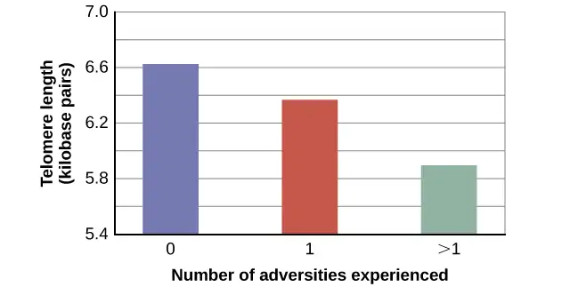
Efforts to dissect the precise cellular and physiological mechanisms linking short telomeres to stress and disease are currently underway. For the time being, telomeres provide us with yet another reminder that stress, especially during early life, can be just as harmful to our health as smoking or fast food (Blackburn & Epel, 2012).
Cardiovascular Disorders¶
The cardiovascular system is composed of the heart and blood circulation system. For many years, disorders that involve the cardiovascular system—known as cardiovascular disorders—have been a major focal point in the study of psychophysiological disorders because of the cardiovascular system’s centrality in the stress response (Everly & Lating, 2002). Heart disease is one such condition. Each year, heart disease causes approximately one in three deaths in the United States, and it is the leading cause of death in the developed world (Centers for Disease Control and Prevention [CDC], 2011; Shapiro, 2005).
The symptoms of heart disease vary somewhat depending on the specific kind of heart disease one has, but they generally involve angina—chest pains or discomfort that occur when the heart does not receive enough blood (Office on Women’s Health, 2009). The pain often feels like the chest is being pressed or squeezed; burning sensations in the chest and shortness of breath are also commonly reported. Such pain and discomfort can spread to the arms, neck, jaws, stomach (as nausea), and back (American Heart Association [AHA], 2012a) (Figure 14.17).
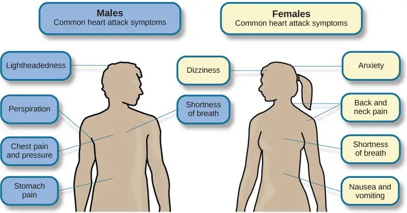
A major risk factor for heart disease is hypertension, which is high blood pressure. Hypertension forces a person’s heart to pump harder, thus putting more physical strain on the heart. If left unchecked, hypertension can lead to a heart attack, stroke, or heart failure; it can also lead to kidney failure and blindness. Hypertension is a serious cardiovascular disorder, and it is sometimes called the silent killer because it has no symptoms—one who has high blood pressure may not even be aware of it (AHA, 2012b).
Many risk factors contributing to cardiovascular disorders have been identified. These risk factors include social determinants such as aging, income, education, and employment status, as well as behavioral risk factors that include unhealthy diet, tobacco use, physical inactivity, and excessive alcohol consumption; obesity and diabetes are additional risk factors (World Health Organization [WHO], 2013).
Over the past few decades, there has been much greater recognition and awareness of the importance of stress and other psychological factors in cardiovascular health (Nusair, Al-dadah, & Kumar, 2012). Indeed, exposure to stressors of many kinds has also been linked to cardiovascular problems; in the case of hypertension, some of these stressors include job strain (Trudel, Brisson, & Milot, 2010), natural disasters (Saito, Kim, Maekawa, Ikeda, & Yokoyama, 1997), marital conflict (Nealey-Moore, Smith, Uchino, Hawkins, & Olson-Cerny, 2007), and exposure to high traffic noise levels at one’s home (de Kluizenaar, Gansevoort, Miedema, & de Jong, 2007). Perceived discrimination appears to be associated with hypertension among African Americans (Sims et al., 2012). In addition, laboratory-based stress tasks, such as performing mental arithmetic under time pressure, immersing one’s hand into ice water (known as the cold pressor test), mirror tracing, and public speaking have all been shown to elevate blood pressure (Phillips, 2011).
Are You Type A or Type B?¶
Sometimes research ideas and theories emerge from seemingly trivial observations. In the 1950s, cardiologist Meyer Friedman was looking over his waiting room furniture, which consisted of upholstered chairs with armrests. Friedman decided to have these chairs reupholstered. When the man doing the reupholstering came to the office to do the work, he commented on how the chairs were worn in a unique manner—the front edges of the cushions were worn down, as were the front tips of the arm rests. It seemed like the cardiology patients were tapping or squeezing the front of the armrests, as well as literally sitting on the edge of their seats (Friedman & Rosenman, 1974). Were cardiology patients somehow different than other types of patients? If so, how?
After researching this matter, Friedman and his colleague, Ray Rosenman, came to understand that people who are prone to heart disease tend to think, feel, and act differently than those who are not. These individuals tend to be intensively driven workaholics who are preoccupied with deadlines and always seem to be in a rush. According to Friedman and Rosenman, these individuals exhibit Type A behavior pattern; those who are more relaxed and laid-back were characterized as Type B (Figure 14.18). In a sample of Type As and Type Bs, Friedman and Rosenman were startled to discover that heart disease was over seven times more frequent among the Type As than the Type Bs (Friedman & Rosenman, 1959).
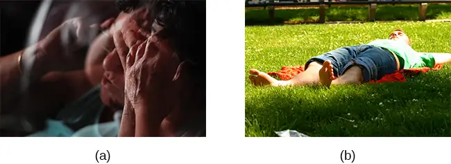
The major components of the Type A pattern include an aggressive and chronic struggle to achieve more and more in less and less time (Friedman & Rosenman, 1974). Specific characteristics of the Type A pattern include an excessive competitive drive, chronic sense of time urgency, impatience, and hostility toward others (particularly those who get in the person’s way).
An example of a person who exhibits Type A behavior pattern is Jeffrey. Even as a child, Jeffrey was intense and driven. He excelled at school, was captain of the swim team, and graduated with honors from an Ivy League college. Jeffrey never seems able to relax; he is always working on something, even on the weekends. However, Jeffrey always seems to feel as though there are not enough hours in the day to accomplish all he feels he should. He volunteers to take on extra tasks at work and often brings his work home with him; he often goes to bed frustrated late at night because he feels that he has not done enough. Jeffrey is quick tempered with his coworkers; he often becomes noticeably agitated when dealing with those coworkers he feels work too slowly or whose work does not meet his standards. He typically reacts with hostility when interrupted at work. He has experienced problems in his marriage over his lack of time spent with family. When caught in traffic during his commute to and from work, Jeffrey incessantly pounds on his horn and swears loudly at other drivers. When Jeffrey was 52, he suffered his first heart attack.
By the 1970s, a majority of practicing cardiologists believed that Type A behavior pattern was a significant risk factor for heart disease (Friedman, 1977). Indeed, a number of early longitudinal investigations demonstrated a link between Type A behavior pattern and later development of heart disease (Rosenman et al., 1975; Haynes, Feinleib, & Kannel, 1980).
Subsequent research examining the association between Type A and heart disease, however, failed to replicate these earlier findings (Glassman, 2007; Myrtek, 2001). Because Type A theory did not pan out as well as they had hoped, researchers shifted their attention toward determining if any of the specific elements of Type A predict heart disease.
Extensive research clearly suggests that the anger/hostility dimension of Type A behavior pattern may be one of the most important factors in the development of heart disease. This relationship was initially described in the Haynes et al. (1980) study mentioned above: Suppressed hostility was found to substantially elevate the risk of heart disease for both men and women. Also, one investigation followed over 1,000 male medical students from 32 to 48 years. At the beginning of the study, these men completed a questionnaire assessing how they react to pressure; some indicated that they respond with high levels of anger, whereas others indicated that they respond with less anger. Decades later, researchers found that those who earlier had indicated the highest levels of anger were over 6 times more likely than those who indicated less anger to have had a heart attack by age 55, and they were 3.5 times more likely to have experienced heart disease by the same age (Chang, Ford, Meoni, Wang, & Klag, 2002). From a health standpoint, it clearly does not pay to be an angry person.
After reviewing and statistically summarizing 35 studies from 1983 to 2006, Chida and Steptoe (2009) concluded that the bulk of the evidence suggests that anger and hostility constitute serious long-term risk factors for adverse cardiovascular outcomes among both healthy individuals and those already suffering from heart disease. One reason angry and hostile moods might contribute to cardiovascular diseases is that such moods can create social strain, mainly in the form of antagonistic social encounters with others. This strain could then lay the foundation for disease-promoting cardiovascular responses among hostile individuals (Vella, Kamarck, Flory, & Manuck, 2012). In this transactional model, hostility and social strain form a cycle (Figure 14.19).
![A figure showing the outlines of the female and male body represent the social interactions outlined in the transactional model of hostility. A hostile person’s behavior is listed as hostile, confrontational, defensive, and aggressive. The recipient’s response is surprise, avoidance, and defensiveness. The transactional cycle is reinforcement of hostile behavior, and the hostile person’s thoughts and feelings are anger, mistrust, and devalues others. Arrows connecting the female and male figures show a continuous pattern.](img/cnx-psych-14-03-transactional.webp)
For example, suppose Kaitlin has a hostile disposition; she has a cynical, distrustful attitude toward others and often thinks that other people are out to get her. She is very defensive around people, even those she has known for years, and she is always looking for signs that others are either disrespecting or belittling her. In the shower each morning before work, she often mentally rehearses what she would say to someone who said or did something that angered her, such as making a political statement that was counter to her own ideology. As Kaitlin goes through these mental rehearsals, she often grins and thinks about the retaliation on anyone who will irk her that day.
Socially, she is confrontational and tends to use a harsh tone with people, which often leads to very disagreeable and sometimes argumentative social interactions. As you might imagine, Kaitlin is not especially popular with others, including coworkers, neighbors, and even members of her own family. They either avoid her at all costs or snap back at her, which causes Kaitlin to become even more cynical and distrustful of others, making her disposition even more hostile. Kaitlin’s hostility—through her own doing—has created an antagonistic environment that cyclically causes her to become even more hostile and angry, thereby potentially setting the stage for cardiovascular problems.
In addition to anger and hostility, a number of other negative emotional states have been linked with heart disease, including negative affectivity and depression (Suls & Bunde, 2005). Negative affectivity is a tendency to experience distressed emotional states involving anger, contempt, disgust, guilt, fear, and nervousness (Watson, Clark, & Tellegen, 1988). It has been linked with the development of both hypertension and heart disease. For example, over 3,000 initially healthy participants in one study were tracked longitudinally, up to 22 years. Those with higher levels of negative affectivity at the time the study began were substantially more likely to develop and be treated for hypertension during the ensuing years than were those with lower levels of negative affectivity (Jonas & Lando, 2000). In addition, a study of over 10,000 middle-aged London-based civil servants who were followed an average of 12.5 years revealed that those who earlier had scored in the upper third on a test of negative affectivity were 32% more likely to have experienced heart disease, heart attack, or angina over a period of years than were those who scored in the lowest third (Nabi, Kivimaki, De Vogli, Marmot, & Singh-Manoux, 2008). Hence, negative affectivity appears to be a potentially vital risk factor for the development of cardiovascular disorders.
Depression and the Heart¶
For centuries, poets and folklore have asserted that there is a connection between moods and the heart (Glassman & Shapiro, 1998). You are no doubt familiar with the notion of a broken heart following a disappointing or depressing event and have encountered that notion in songs, films, and literature.
Perhaps the first to recognize the link between depression and heart disease was Benjamin Malzberg (1937), who found that the death rate among institutionalized patients with melancholia (an archaic term for depression) was six times higher than that of the population. A classic study in the late 1970s looked at over 8,000 people diagnosed with manic-depressive disorder (now classified as bipolar disorder) in Denmark, finding a nearly 50% increase in deaths from heart disease among these patients compared with the general Danish population (Weeke, 1979). By the early 1990s, evidence began to accumulate showing that depressed individuals who were followed for long periods of time were at increased risk for heart disease and cardiac death (Glassman, 2007). In one investigation of over 700 Denmark residents, those with the highest depression scores were 71% more likely to have experienced a heart attack than were those with lower depression scores (Barefoot & Schroll, 1996). Figure 14.20 illustrates the gradation in risk of heart attacks for both men and women.
![A bar graph shows the relationship between depression score quartiles for men and women on the x-axis and heart attacks per 1000 on the y-axis. In the 1st depression score quartile, 3 out of 1000 women experienced heart attacks compared to 8 out of 1000 men. In the 2nd depression score quartile, 4 out of 1000 women experienced heart attacks compared to 11 out of 1000 men. In the 3rd depression score quartile, 5 out of 1000 women experienced heart attacks compared to 9 out of 1000 men. In the 4th depression score quartile, 5 out of 1000 women experienced heart attacks compared to 15 out of 1000 men.](img/cnx-psych-14-03-heartatt.webp)
After more than two decades of research, it is now clear that a relationship exists: Patients with heart disease have more depression than the general population, and people with depression are more likely to eventually develop heart disease and experience higher mortality than those who do not have depression (Hare, Toukhsati, Johansson, & Jaarsma, 2013); the more severe the depression, the higher the risk (Glassman, 2007). Consider the following:
- In one study, death rates from cardiovascular problems were substantially higher in depressed people; depressed men were 50% more likely to have died from cardiovascular problems, and depressed women were 70% more likely (Ösby, Brandt, Correia, Ekbom, & Sparén, 2001).
- A statistical review of 10 longitudinal studies involving initially healthy individuals revealed that those with elevated depressive symptoms have, on average, a 64% greater risk of developing heart disease than do those with fewer symptoms (Wulsin & Singal, 2003).
- A study of over 63,000 registered nurses found that those with more depressed symptoms when the study began were 49% more likely to experience fatal heart disease over a 12-year period (Whang et al., 2009).
The American Heart Association, fully aware of the established importance of depression in cardiovascular diseases, several years ago recommended routine depression screening for all heart disease patients (Lichtman et al., 2008). Recently, they have recommended including depression as a risk factor for heart disease patients (AHA, 2014).
Although the exact mechanisms through which depression might produce heart problems have not been fully clarified, a recent investigation examining this connection in early life has shed some light. In an ongoing study of childhood depression, adolescents who had been diagnosed with depression as children were more likely to be obese, smoke, and be physically inactive than were those who had not received this diagnosis (Rottenberg et al., 2014). One implication of this study is that depression, especially if it occurs early in life, may increase the likelihood of living an unhealthy lifestyle, thereby predisposing people to an unfavorable cardiovascular disease risk profile.
It is important to point out that depression may be just one piece of the emotional puzzle in elevating the risk for heart disease, and that chronically experiencing several negative emotional states may be especially important. A longitudinal investigation of Vietnam War veterans found that depression, anxiety, hostility, and trait anger each independently predicted the onset of heart disease (Boyle, Michalek, & Suarez, 2006). However, when each of these negative psychological attributes was combined into a single variable, this new variable (which researchers called psychological risk factor) predicted heart disease more strongly than any of the individual variables. Thus, rather than examining the predictive power of isolated psychological risk factors, it seems crucial for future researchers to examine the effects of combined and more general negative emotional and psychological traits in the development of cardiovascular illnesses.
Asthma¶
Asthma is a chronic and serious disease in which the airways of the respiratory system become obstructed, leading to great difficulty expelling air from the lungs. The airway obstruction is caused by inflammation of the airways (leading to thickening of the airway walls) and a tightening of the muscles around them, resulting in a narrowing of the airways (Figure 14.21) (American Lung Association, 2010). Because airways become obstructed, a person with asthma will sometimes have great difficulty breathing and will experience repeated episodes of wheezing, chest tightness, shortness of breath, and coughing, the latter occurring mostly during the morning and night (CDC, 2006).
![The effect of asthma on airways is illustrated. A silhouette of a person is shown with the lungs and airways labeled. There is an arrow coming from an airway in the lung leading to a magnification of a normal airway. A cross-section of the normal airway shows the muscle and the airway wall, with plenty of room for air to get through. An airway during asthma symptoms is also shown, and the labeled symptoms are narrowed airway (limited air flow), tightened muscles constrict airway, inflamed/thickened airway wall, and mucus. A cross-section of the airway during asthma symptoms shows the thickened airway wall, mucus and muscle. There is much less room for air to get through.](img/cnx-psych-14-03-asthma.webp)
According to the Centers for Disease Control and Prevention (CDC), around 4,000 people each year die from asthma-related causes, and asthma is a contributing factor to another 7,000 deaths each year (CDC, 2013a). The CDC has revealed that asthma affects 18.7 million U.S. adults and is more common among people with lower income levels (CDC, 2013b). Especially concerning is that asthma is on the rise, with rates of asthma increasing 157% between 2000 and 2010 (CDC, 2013b).
Asthma attacks are acute episodes in which an asthma sufferer experiences the full range of symptoms. Asthma exacerbation is often triggered by environmental factors, such as air pollution, allergens (e.g., pollen, mold, and pet hairs), cigarette smoke, airway infections, cold air or a sudden change in temperature, and exercise (CDC, 2013b). Certain regions and neighborhoods are known for having notably high rates of asthma and related diseases due to high rates of concentrated pollution and low air quality. For example, Long Beach, California and Bronx, New York contain "asthma alleys" due to the density of trucking, power plants, factories, sewage works, or other agents of air pollution.
Psychological factors appear to play an important role in asthma (Wright, Rodriguez, & Cohen, 1998), although some believe that psychological factors serve as potential triggers in only a subset of asthma patients (Ritz, Steptoe, Bobb, Harris, & Edwards, 2006). Many studies over the years have demonstrated that some people with asthma will experience asthma-like symptoms if they expect to experience such symptoms, such as when breathing an inert substance that they (falsely) believe will lead to airway obstruction (Sodergren & Hyland, 1999). As stress and emotions directly affect immune and respiratory functions, psychological factors likely serve as one of the most common triggers of asthma exacerbation (Trueba & Ritz, 2013).
People with asthma tend to report and display a high level of negative emotions such as anxiety, and asthma attacks have been linked to periods of high emotionality (Lehrer, Isenberg, & Hochron, 1993). In addition, high levels of emotional distress during both laboratory tasks and daily life have been found to negatively affect airway function and can produce asthma-like symptoms in people with asthma (von Leupoldt, Ehnes, & Dahme, 2006). In one investigation, 20 adults with asthma wore preprogrammed wristwatches that signaled them to breathe into a portable device that measures airway function. Results showed that higher levels of negative emotions and stress were associated with increased airway obstruction and self-reported asthma symptoms (Smyth, Soefer, Hurewitz, Kliment, & Stone, 1999). In addition, D’Amato, Liccardi, Cecchi, Pellegrino, & D’Amato (2010) described a case study of an 18-year-old man with asthma whose girlfriend had broken up with him, leaving him in a depressed state. She had also unfriended him on Facebook, while friending other young males. Eventually, the young man was able to “friend” her once again and could monitor her activity through Facebook. Subsequently, he would experience asthma symptoms whenever he logged on and accessed her profile. When he later resolved not to use Facebook any longer, the asthma attacks stopped. This case suggests that the use of Facebook and other forms of social media may represent a new source of stress—it may be a triggering factor for asthma attacks, especially in depressed asthmatic individuals.
Exposure to stressful experiences, particularly those that involve parental or interpersonal conflicts, has been linked to the development of asthma throughout the lifespan. A longitudinal study of 145 children found that parenting difficulties during the first year of life increased the chances that the child developed asthma by 107% (Klinnert et al., 2001). In addition, a cross-sectional study of over 10,000 Finnish college students found that high rates of parent or personal conflicts (e.g., parental divorce, separation from spouse, or severe conflicts in other long-term relationships) increased the risk of asthma onset (Kilpeläinen, Koskenvuo, Helenius, & Terho, 2002). Further, a study of over 4,000 middle-aged men who were interviewed in the early 1990s and again a decade later found that breaking off an important life partnership (e.g., divorce or breaking off relationship from parents) increased the risk of developing asthma by 124% over the time of the study (Loerbroks, Apfelbacher, Thayer, Debling, & Stürmer, 2009).
Headaches¶
A headache is a continuous pain anywhere in the head and neck region. Inflammation of the sinuses caused by an infection or allergic reaction can cause sinus headaches, which are experienced as pain in the cheeks and forehead. Migraine headaches are a type of headache thought to be caused by blood vessel swelling and increased blood flow (McIntosh, 2013). Migraines are characterized by severe pain on one or both sides of the head, an upset stomach, and disturbed vision. They are more frequently experienced by women than by men (American Academy of Neurology, 2014). Tension headaches are triggered by tightening/tensing of facial and neck muscles; they are the most commonly experienced kind of headache, accounting for about 42% of all headaches worldwide (Stovner et al., 2007). In the United States, well over one-third of the population experiences tension headaches each year, and 2–3% of the population suffers from chronic tension headaches (Schwartz, Stewart, Simon, & Lipton, 1998).
A number of factors can contribute to tension headaches, including sleep deprivation, skipping meals, eye strain, overexertion, muscular tension caused by poor posture, and stress (MedicineNet, 2013). Although there is uncertainty regarding the exact mechanisms through which stress can produce tension headaches, stress has been demonstrated to increase sensitivity to pain (Caceres & Burns, 1997; Logan et al., 2001). In general, tension headache sufferers, compared to non-sufferers, have a lower threshold for and greater sensitivity to pain (Ukestad & Wittrock, 1996), and they report greater levels of subjective stress when faced with a stressor (Myers, Wittrock, & Foreman, 1998). Thus, stress may contribute to tension headaches by increasing pain sensitivity in already-sensitive pain pathways in tension headache sufferers (Cathcart, Petkov, & Pritchard, 2008).
14.4 Regulation of Stress¶
Learning Objectives
By the end of this section, you will be able to:
- Define coping and differentiate between problem-focused and emotion-focused coping
- Describe the importance of perceived control in our reactions to stress
- Explain how social support is vital in health and longevity
As we learned in the previous section, stress—especially if it is chronic—takes a toll on our bodies and can have enormously negative health implications. When we experience events in our lives that we appraise as stressful, it is essential that we use effective coping strategies to manage our stress. Coping refers to mental and behavioral efforts that we use to deal with problems relating to stress.
Coping Styles¶
Lazarus and Folkman (1984) distinguished two fundamental kinds of coping: problem-focused coping and emotion-focused coping. In problem-focused coping, one attempts to manage or alter the problem that is causing one to experience stress (i.e., the stressor). Problem-focused coping strategies are similar to strategies used in everyday problem-solving: they typically involve identifying the problem, considering possible solutions, weighing the costs and benefits of these solutions, and then selecting an alternative (Lazarus & Folkman, 1984). As an example, suppose Bradford receives a midterm notice that he is failing statistics class. If Bradford adopts a problem-focused coping approach to managing his stress, he would be proactive in trying to alleviate the source of the stress. He might contact his professor to discuss what must be done to raise his grade, he might also decide to set aside two hours daily to study statistics assignments, and he may seek tutoring assistance. A problem-focused approach to managing stress means we actively try to do things to address the problem.
Emotion-focused coping, in contrast, consists of efforts to change or reduce the negative emotions associated with stress. These efforts may include avoiding, minimizing, or distancing oneself from the problem, or positive comparisons with others (“I’m not as bad off as she is”), or seeking something positive in a negative event (“Now that I’ve been fired, I can sleep in for a few days”). In some cases, emotion-focused coping strategies involve reappraisal, whereby the stressor is construed differently (and somewhat self-deceptively) without changing its objective level of threat (Lazarus & Folkman, 1984). For example, a person sentenced to federal prison who thinks, “This will give me a great chance to network with others,” is using reappraisal. If Bradford adopted an emotion-focused approach to managing his midterm deficiency stress, he might watch a comedy movie, play video games, or spend hours on social media to take his mind off the situation. In a certain sense, emotion-focused coping can be thought of as treating the symptoms rather than the actual cause.
While many stressors elicit both kinds of coping strategies, problem-focused coping is more likely to occur when encountering stressors we perceive as controllable, while emotion-focused coping is more likely to predominate when faced with stressors that we believe we are powerless to change (Folkman & Lazarus, 1980). Clearly, emotion-focused coping is more effective in dealing with uncontrollable stressors. For example, the stress you experience when a loved one dies can be overwhelming. You are simply powerless to change the situation as there is nothing you can do to bring this person back. The most helpful coping response is emotion-focused coping aimed at minimizing the pain of the grieving period.
Fortunately, most stressors we encounter can be modified and are, to varying degrees, controllable. A person who cannot stand her job can quit and look for work elsewhere; a middle-aged divorcee can find another potential partner; the freshman who fails an exam can study harder next time, and a breast lump does not necessarily mean that one is fated to die of breast cancer.
Control and Stress¶
The desire and ability to predict events, make decisions, and affect outcomes—that is, to enact control in our lives—is a basic tenet of human behavior (Everly & Lating, 2002). Albert Bandura (1997) stated that “the intensity and chronicity of human stress is governed largely by perceived control over the demands of one’s life” (p. 262). As cogently described in his statement, our reaction to potential stressors depends to a large extent on how much control we feel we have over such things. Perceived control is our beliefs about our personal capacity to exert influence over and shape outcomes, and it has major implications for our health and happiness (Infurna & Gerstorf, 2014). Extensive research has demonstrated that perceptions of personal control are associated with a variety of favorable outcomes, such as better physical and mental health and greater psychological well-being (Diehl & Hay, 2010). Greater personal control is also associated with lower reactivity to stressors in daily life. For example, researchers in one investigation found that higher levels of perceived control at one point in time were later associated with lower emotional and physical reactivity to interpersonal stressors (Neupert, Almeida, & Charles, 2007). Further, a daily diary study with 34 older widows found that their stress and anxiety levels were significantly reduced on days during which the widows felt greater perceived control (Ong, Bergeman, & Bisconti, 2005).
Dig Deeper: Learned Helplessness
When we lack a sense of control over the events in our lives, particularly when those events are threatening, harmful, or noxious, the psychological consequences can be profound. In one of the better illustrations of this concept, psychologist Martin Seligman conducted a series of classic experiments in the 1960s (Seligman & Maier, 1967) in which dogs were placed in a chamber where they received electric shocks from which they could not escape. Later, when these dogs were given the opportunity to escape the shocks by jumping across a partition, most failed to even try; they seemed to just give up and passively accept any shocks the experimenters chose to administer. In comparison, dogs who were previously allowed to escape the shocks tended to jump the partition and escape the pain (Figure 14.22).
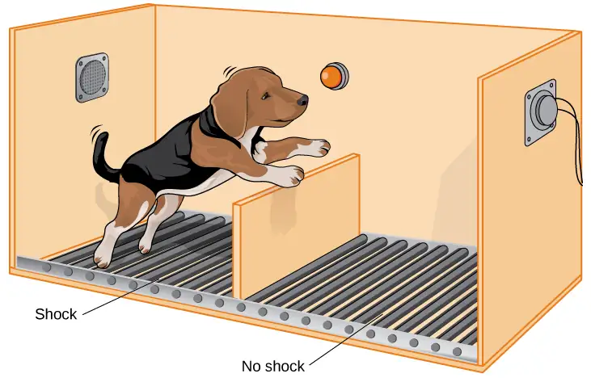
Seligman believed that the dogs who failed to try to escape the later shocks were demonstrating learned helplessness: They had acquired a belief that they were powerless to do anything about the stimulation they were receiving. Seligman also believed that the passivity and lack of initiative these dogs demonstrated was similar to that observed in human depression. Therefore, Seligman speculated that learned helplessness might be an important cause of depression in humans: Humans who experience negative life events that they believe they are unable to control may become helpless. As a result, they give up trying to change the situation and some may become depressed and show lack of initiative in future situations in which they can control the outcomes (Seligman, Maier, & Geer, 1968). In an application Seligman never proposed, learned helplessness was later used as a methodology in the torture of prisoners by U.S. military and intelligence personnel following the 2001 attacks on the World Trade Center. The psychologists who designed the torture program, James E. Mitchell and Bruce Jesson, theorized that detainees who were subjected to uncontrollable afflictions would eventually become passive and compliant, making them more likely to reveal information to their interrogators. There is little evidence that the program achieved worthwhile results. It is now widely regarded as unethical and unjustified. This example emphasizes the need to consistently consider the ethics of research studies and their applications (Konnikova, 2015).
Seligman and colleagues later reformulated the original learned helplessness model of depression (Abramson, Seligman, & Teasdale, 1978). In their reformulation, they emphasized attributions (i.e., a mental explanation for why something occurred) that fostered a sense of learned helplessness. For example, suppose a coworker shows up late to work; your belief as to what caused the coworker’s tardiness would be an attribution (e.g., too much traffic, slept too late, or just doesn’t care about being on time).
The reformulated version of Seligman’s study holds that the attributions made for negative life events contribute to depression. Consider the example of a student who performs poorly on a midterm exam. This model suggests that the student will make three kinds of attributions for this outcome: internal vs. external (believing the outcome was caused by his own personal inadequacies or by environmental factors), stable vs. unstable (believing the cause can be changed or is permanent), and global vs. specific (believing the outcome is a sign of inadequacy in most everything versus just this area). Assume that the student makes an internal (“I’m just not smart”), stable (“Nothing can be done to change the fact that I’m not smart”) and global (“This is another example of how lousy I am at everything”) attribution for the poor performance. The reformulated theory predicts that the student would perceive a lack of control over this stressful event and thus be especially prone to developing depression. Indeed, research has demonstrated that people who have a tendency to make internal, global, and stable attributions for bad outcomes tend to develop symptoms of depression when faced with negative life experiences (Peterson & Seligman, 1984). Fortunately, attribution habits can be changed through practice. Training in healthy attribution habits has been shown to make people less vulnerable to depression (Konnikova, 2015).
Seligman’s learned helplessness model has emerged over the years as a leading theoretical explanation for the onset of major depressive disorder. When you study psychological disorders, you will learn more about the latest reformulation of this model—now called hopelessness theory.
People who report higher levels of perceived control view their health as controllable, thereby making it more likely that they will better manage their health and engage in behaviors conducive to good health (Bandura, 2004). Not surprisingly, greater perceived control has been linked to lower risk of physical health problems, including declines in physical functioning (Infurna, Gerstorf, Ram, Schupp, & Wagner, 2011), heart attacks (Rosengren et al., 2004), and both cardiovascular disease incidence (Stürmer, Hasselbach, & Amelang, 2006) and mortality from cardiac disease (Surtees et al., 2010). In addition, longitudinal studies of British civil servants have found that those in low-status jobs (e.g., clerical and office support staff) in which the degree of control over the job is minimal are considerably more likely to develop heart disease than those with high-status jobs or considerable control over their jobs (Marmot, Bosma, Hemingway, & Stansfeld, 1997).
The link between perceived control and health may provide an explanation for the frequently observed relationship between social class and health outcomes (Kraus, Piff, Mendoza-Denton, Rheinschmidt, & Keltner, 2012). In general, research has found that more affluent individuals experience better health partly because they tend to believe that they can personally control and manage their reactions to life’s stressors (Johnson & Krueger, 2006). Perhaps buoyed by the perceived level of control, individuals of higher social class may be prone to overestimating the degree of influence they have over particular outcomes. For example, those of higher social class tend to believe that their votes have greater sway on election outcomes than do those of lower social class, which may explain higher rates of voting in more affluent communities (Krosnick, 1990). Other research has found that a sense of perceived control can protect less affluent individuals from poorer health, depression, and reduced life-satisfaction—all of which tend to accompany lower social standing (Lachman & Weaver, 1998).
Taken together, findings from these and many other studies clearly suggest that perceptions of control and coping abilities are important in managing and coping with the stressors we encounter throughout life.
Social Support¶
The need to form and maintain strong, stable relationships with others is a powerful, pervasive, and fundamental human motive (Baumeister & Leary, 1995). Building strong interpersonal relationships with others helps us establish a network of close, caring individuals who can provide social support in times of distress, sorrow, and fear. Social support can be thought of as the soothing impact of friends, family, and acquaintances (Baron & Kerr, 2003). Social support can take many forms, including advice, guidance, encouragement, acceptance, emotional comfort, and tangible assistance (such as financial help). Thus, other people can be very comforting to us when we are faced with a wide range of life stressors, and they can be extremely helpful in our efforts to manage these challenges. Even in nonhuman animals, species mates can offer social support during times of stress. For example, elephants seem to be able to sense when other elephants are stressed and will often comfort them with physical contact—such as a trunk touch—or an empathetic vocal response (Krumboltz, 2014).
Scientific interest in the importance of social support first emerged in the 1970s when health researchers developed an interest in the health consequences of being socially integrated (Stroebe & Stroebe, 1996). Interest was further fueled by longitudinal studies showing that social connectedness reduced mortality. In one classic study, nearly 7,000 Alameda County, California, residents were followed over 9 years. Those who had previously indicated that they lacked social and community ties were more likely to die during the follow-up period than those with more extensive social networks. Compared to those with the most social contacts, isolated men and women were, respectively, 2.3 and 2.8 times more likely to die. These trends persisted even after controlling for a variety of health-related variables, such as smoking, alcohol consumption, self-reported health at the beginning of the study, and physical activity (Berkman & Syme, 1979).
Since the time of that study, social support has emerged as one of the well-documented psychosocial factors affecting health outcomes (Uchino, 2009). A statistical review of 148 studies conducted between 1982 and 2007 involving over 300,000 participants concluded that individuals with stronger social relationships have a 50% greater likelihood of survival compared to those with weak or insufficient social relationships (Holt-Lunstad, Smith, & Layton, 2010). According to the researchers, the magnitude of the effect of social support observed in this study is comparable with quitting smoking and exceeded many well-known risk factors for mortality, such as obesity and physical inactivity (Figure 14.23).
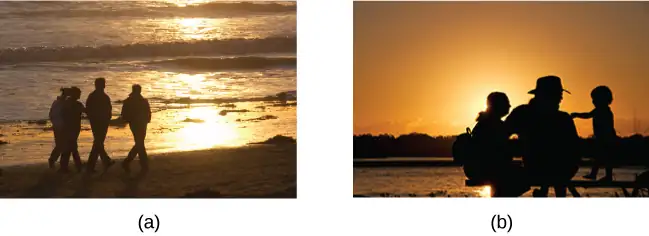
A number of large-scale studies have found that individuals with low levels of social support are at greater risk of mortality, especially from cardiovascular disorders (Brummett et al., 2001). Further, higher levels of social support have been linked to better survival rates following breast cancer (Falagas et al., 2007) and infectious diseases, especially HIV infection (Lee & Rotheram-Borus, 2001). In fact, a person with high levels of social support is less likely to contract a common cold. In one study, 334 participants completed questionnaires assessing their sociability; these individuals were subsequently exposed to a virus that causes a common cold and monitored for several weeks to see who became ill. Results showed that increased sociability was linearly associated with a decreased probability of developing a cold (Cohen, Doyle, Turner, Alper, & Skoner, 2003).
For many of us, friends are a vital source of social support. But what if you find yourself in a situation in which you have few friends and companions? Many students who leave home to attend and live at college experience drastic reductions in their social support, which makes them vulnerable to anxiety, depression, and loneliness. Social media can sometimes be useful in navigating these transitions (Raney & Troop Gordon, 2012) but might also cause increases in loneliness (Hunt, Marx, Lipson, & Young, 2018). For this reason, many colleges have designed first-year programs, such as peer mentoring (Raymond & Shepard, 2018), that can help students build new social networks. For some people, our families—especially our parents—are a major source of social support.
Social support appears to work by boosting the immune system, especially among people who are experiencing stress (Uchino, Vaughn, Carlisle, & Birmingham, 2012). In a pioneering study, spouses of cancer patients who reported high levels of social support showed indications of better immune functioning on two out of three immune functioning measures, compared to spouses who were below the median on reported social support (Baron, Cutrona, Hicklin, Russell, & Lubaroff, 1990). Studies of other populations have produced similar results, including those of spousal caregivers of dementia sufferers, medical students, elderly adults, and cancer patients (Cohen & Herbert, 1996; Kiecolt-Glaser, McGuire, Robles, & Glaser, 2002).
In addition, social support has been shown to reduce blood pressure for people performing stressful tasks, such as giving a speech or performing mental arithmetic (Lepore, 1998). In these kinds of studies, participants are usually asked to perform a stressful task either alone, with a stranger present (who may be either supportive or unsupportive), or with a friend present. Those tested with a friend present generally exhibit lower blood pressure than those tested alone or with a stranger (Fontana, Diegnan, Villeneuve, & Lepore, 1999). In one study, 112 female participants who performed stressful mental arithmetic exhibited lower blood pressure when they received support from a friend rather than a stranger, but only if the friend was a male (Phillips, Gallagher, & Carroll, 2009). Although these findings are somewhat difficult to interpret, the authors mention that it is possible that females feel less supported and more evaluated by other females, particularly females whose opinions they value.
Taken together, the findings above suggest one of the reasons social support is connected to favorable health outcomes is because it has several beneficial physiological effects in stressful situations. However, it is also important to consider the possibility that social support may lead to better health behaviors, such as a healthy diet, exercising, smoking cessation, and cooperation with medical regimens (Uchino, 2009).
Dig Deeper: Stress and Discrimination
Being the recipient of prejudice and discrimination is associated with a number of negative outcomes. Many studies have shown how discrimination is a significant stressor for marginalized groups (Pascoe & Smart Richman, 2009). Discrimination negatively impacts both physical and mental health for individuals in stigmatized groups. As you’ll learn when you study social psychology, various social identities (such as gender, age, religion, sexuality, ethnicity) often lead people to simultaneously be exposed to multiple forms of discrimination, which can have even stronger negative effects on mental and physical health (Vines, Ward, Cordoba, & Black, 2017). For example, the amplified levels of discrimination faced by Latinx transgender women may have related effects, leading to high stress levels and poor mental and physical health outcomes.
Perceived control and the general adaptation syndrome help explain the process by which discrimination affects mental and physical health. Discrimination can be conceptualized as an uncontrollable, persistent, and unpredictable stressor. When a discriminatory event occurs, the target of the event initially experiences an acute stress response (alarm stage). This acute reaction alone does not typically have a great impact on health. However, discrimination tends to be a chronic stressor. As people in marginalized groups experience repeated discrimination, they develop a heightened reactivity as their bodies prepare to act quickly (resistance stage). This long-term accumulation of stress responses can eventually lead to increases in negative emotion and wear on physical health (exhaustion stage). This explains why a history of perceived discrimination is associated with a host of mental and physical health problems including depression, cardiovascular disease, and cancer (Pascoe & Smart Richman, 2009).
Protecting stigmatized groups from the negative impact of discrimination-induced stress may involve reducing the incidence of discriminatory behaviors in conjunction with protective strategies that reduce the impact of discriminatory events when they occur. Civil rights legislation has protected some stigmatized groups by making discrimination a prosecutable offense in many social contexts. However, some groups (e.g., transgender people) often lack important legal recourse when discrimination occurs. Moreover, most modern discrimination comes in subtle forms that fall below the radar of the law. For example, discrimination may be experienced as selective inhospitality toward people of specific races or ethnicities, but little is done in response since it would be easy to attribute the behavior to other causes. Although some cultural changes are increasingly helping people to recognize and control subtle discrimination, such shifts may take a long time.
Similar to other stressors, buffers like social support and healthy coping strategies appear to be effective in lowering the impact of perceived discrimination. For example, one study (Ajrouch, Reisine, Lim, Sohn, & Ismail, 2010) showed that discrimination predicted high psychological distress among African American mothers living in Detroit. However, the women who had readily available emotional support from friends and family experienced less distress than those with fewer social resources. While coping strategies and social support may buffer the effects of discrimination, they fail to erase all of the negative impacts. Vigilant antidiscrimination efforts, including the development of legal protections for vulnerable groups, are needed to reduce discrimination, stress, and the resulting physical and mental health effects.
Stress Reduction Techniques¶
Beyond having a sense of control and establishing social support networks, there are numerous other means by which we can manage stress (Figure 14.24). A common technique people use to combat stress is exercise (Salmon, 2001). It is well-established that exercise, both of long (aerobic) and short (anaerobic) duration, is beneficial for both physical and mental health (Everly & Lating, 2002). There is considerable evidence that physically fit individuals are more resistant to the adverse effects of stress and recover more quickly from stress than less physically fit individuals (Cotton, 1990). In a study of more than 500 Swiss police officers and emergency service personnel, increased physical fitness was associated with reduced stress, and regular exercise was reported to protect against stress-related health problems (Gerber, Kellman, Hartman, & Pühse, 2010).
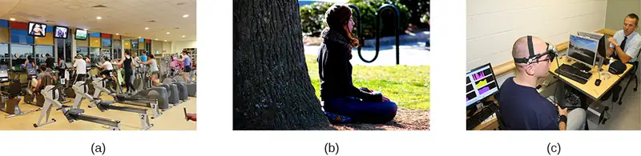
One reason exercise may be beneficial is because it might buffer some of the deleterious physiological mechanisms of stress. One study found rats that exercised for six weeks showed a decrease in hypothalamic-pituitary-adrenal responsiveness to mild stressors (Campeau et al., 2010). In high-stress humans, exercise has been shown to prevent telomere shortening, which may explain the common observation of a youthful appearance among those who exercise regularly (Puterman et al., 2010). Further, exercise in later adulthood appears to minimize the detrimental effects of stress on the hippocampus and memory (Head, Singh, & Bugg, 2012). Among cancer survivors, exercise has been shown to reduce anxiety (Speck, Courneya, Masse, Duval, & Schmitz, 2010) and depressive symptoms (Craft, VanIterson, Helenowski, Rademaker, & Courneya, 2012). Clearly, exercise is a highly effective tool for regulating stress.
In the 1970s, Herbert Benson, a cardiologist, developed a stress reduction method called the relaxation response technique (Greenberg, 2006). The relaxation response technique combines relaxation with transcendental meditation, and consists of four components (Stein, 2001):
- sitting upright on a comfortable chair with feet on the ground and body in a relaxed position,
- being in a quiet environment with eyes closed,
- repeating a word or a phrase—a mantra—to oneself, such as “alert mind, calm body,”
- passively allowing the mind to focus on pleasant thoughts, such as nature or the warmth of your blood nourishing your body.
The relaxation response approach is conceptualized as a general approach to stress reduction that reduces sympathetic arousal, and it has been used effectively to treat people with high blood pressure (Benson & Proctor, 1994).
Another technique to combat stress, biofeedback, was developed by Gary Schwartz at Harvard University in the early 1970s. Biofeedback is a technique that uses electronic equipment to accurately measure a person’s neuromuscular and autonomic activity—feedback is provided in the form of visual or auditory signals. The main assumption of this approach is that providing somebody biofeedback will enable the individual to develop strategies that help gain some level of voluntary control over what are normally involuntary bodily processes (Schwartz & Schwartz, 1995). A number of different bodily measures have been used in biofeedback research, including facial muscle movement, brain activity, and skin temperature, and it has been applied successfully with individuals experiencing tension headaches, high blood pressure, asthma, and phobias (Stein, 2001).
14.5 The Pursuit of Happiness¶
Learning Objectives
By the end of this section, you will be able to:
- Define and discuss happiness, including its determinants
- Describe the field of positive psychology and identify the kinds of problems it addresses
- Explain the meaning of positive affect and discuss its importance in health outcomes
- Describe the concept of flow and its relationship to happiness and fulfillment
Although the study of stress and how it affects us physically and psychologically is fascinating, it is—admittedly—somewhat of a grim topic. Psychology is also interested in the study of a more upbeat and encouraging approach to human affairs—the quest for happiness.
Happiness¶
America’s founders declared that its citizens have an unalienable right to pursue happiness. But what is happiness? When asked to define the term, people emphasize different aspects of this elusive state. Indeed, happiness is somewhat ambiguous and can be defined from different perspectives (Martin, 2012). Some people, especially those who are highly committed to their religious faith, view happiness in ways that emphasize virtuosness, reverence, and enlightened spirituality. Others see happiness as primarily contentment—the inner peace and joy that come from deep satisfaction with one’s surroundings, relationships with others, accomplishments, and oneself. Still others view happiness mainly as pleasurable engagement with their personal environment—having a career and hobbies that are engaging, meaningful, rewarding, and exciting. These differences, of course, are merely differences in emphasis. Most people would probably agree that each of these views, in some respects, captures the essence of happiness.
Elements of Happiness¶
Some psychologists have suggested that happiness consists of three distinct elements: the pleasant life, the good life, and the meaningful life, as shown in Figure 14.25 (Seligman, 2002; Seligman, Steen, Park, & Peterson, 2005). The pleasant life is realized through the attainment of day-to-day pleasures that add fun, joy, and excitement to our lives. For example, evening walks along the beach and a fulfilling sex life can enhance our daily pleasure and contribute to the pleasant life. The good life is achieved through identifying our unique skills and abilities and engaging these talents to enrich our lives; those who achieve the good life often find themselves absorbed in their work or their recreational pursuits. The meaningful life involves a deep sense of fulfillment that comes from using our talents in the service of the greater good: in ways that benefit the lives of others or that make the world a better place. In general, the happiest people tend to be those who pursue the full life—they orient their pursuits toward all three elements (Seligman et al., 2005).
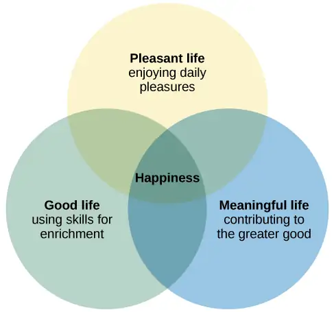
For practical purposes, a precise definition of happiness might incorporate each of these elements: an enduring state of mind consisting of joy, contentment, and other positive emotions, plus the sense that one’s life has meaning and value (Lyubomirsky, 2001). The definition implies that happiness is a long-term state—what is often characterized as subjective well-being—rather than merely a transient positive mood we all experience from time to time. It is this enduring happiness that has captured the interests of psychologists and other social scientists.
The study of happiness has grown dramatically in the last three decades (Diener, 2013). One of the most basic questions that happiness investigators routinely examine is this: How happy are people in general? The average person in the world tends to be relatively happy and tends to indicate experiencing more positive feelings than negative feelings (Diener, Ng, Harter, & Arora, 2010). When asked to evaluate their current lives on a scale ranging from 0 to 10 (with 0 representing “worst possible life” and 10 representing “best possible life”), people in more than 150 countries surveyed from 2010–2012 reported an average score of 5.2. People who live in North America, Australia, and New Zealand reported the highest average score at 7.1, whereas those living Sub-Saharan Africa reported the lowest average score at 4.6 (Helliwell, Layard, & Sachs, 2013). Worldwide, the five happiest countries are Denmark, Norway, Switzerland, the Netherlands, and Sweden; the United States is ranked 17th happiest (Figure 14.26) (Helliwell et al., 2013).
Several years ago, a Gallup survey of more than 1,000 U.S. adults found that 52% reported that they were “very happy.” In addition, more than 8 in 10 indicated that they were “very satisfied” with their lives (Carroll, 2007). However, a recent poll found that only 42% of American adults report being "very happy." The groups that show the greatest declines in happiness are people of color, those who have not completed a college education, and those who politically identify as Democrats or independents (McCarthy, 2020). These results suggest that challenging economic conditions may be related to declines in happiness. Of course, this interpretation implies that happiness is closely tied to one's finances. But, is it? What factors influence happiness?
Factors Connected to Happiness¶
What really makes people happy? What factors contribute to sustained joy and contentment? Is it money, attractiveness, material possessions, a rewarding occupation, a satisfying relationship? Extensive research over the years has examined this question. One finding is that age is related to happiness: Life satisfaction usually increases the older people get, but there do not appear to be gender differences in happiness (Diener, Suh, Lucas, & Smith, 1999). Although it is important to point out that much of this work has been correlational, many of the key findings (some of which may surprise you) are summarized below.
Family and other social relationships appear to be key factors correlated with happiness. Studies show that married people report being happier than those who are single, divorced, or widowed (Diener et al., 1999). Happy individuals also report that their marriages are fulfilling (Lyubomirsky, King, & Diener, 2005). In fact, some have suggested that satisfaction with marriage and family life is the strongest predictor of happiness (Myers, 2000). Happy people tend to have more friends, more high-quality social relationships, and stronger social support networks than less happy people (Lyubomirsky et al., 2005). Happy people also have a high frequency of contact with friends (Pinquart & Sörensen, 2000).
Can money buy happiness? In general, extensive research suggests that the answer is yes, but with several caveats. While a nation’s per capita gross domestic product (GDP) is associated with happiness levels (Helliwell et al., 2013), changes in GDP (which is a less certain index of household income) bear little relationship to changes in happiness (Diener, Tay, & Oishi, 2013). On the whole, residents of affluent countries tend to be happier than residents of poor countries; within countries, wealthy individuals are happier than poor individuals, but the association is much weaker (Diener & Biswas-Diener, 2002). To the extent that it leads to increases in purchasing power, increases in income are associated with increases in happiness (Diener, Oishi, & Ryan, 2013). However, income within societies appears to correlate with happiness only up to a point. In a study of over 450,000 U.S. residents surveyed by the Gallup Organization, Kahneman and Deaton (2010) found that well-being rises with annual income, but only up to $75,000. The average increase in reported well-being for people with incomes greater than $75,000 was null. As implausible as these findings might seem—after all, higher incomes would enable people to indulge in Hawaiian vacations, prime seats at sporting events, expensive automobiles, and expansive new homes—higher incomes may impair people’s ability to savor and enjoy the small pleasures of life (Kahneman, 2011). Indeed, researchers in one study found that participants exposed to a subliminal reminder of wealth spent less time savoring a chocolate candy bar and exhibited less enjoyment of this experience than did participants who were not reminded of wealth (Quoidbach, Dunn, Petrides, & Mikolajczak, 2010).
What about education and employment? Happy people, compared to those who are less happy, are more likely to graduate from college and secure more meaningful and engaging jobs. Once they obtain a job, they are also more likely to succeed (Lyubomirsky et al., 2005). While education shows a positive (but weak) correlation with happiness, intelligence is not appreciably related to happiness (Diener et al., 1999).
Does religiosity correlate with happiness? In general, the answer is yes (Hackney & Sanders, 2003). However, the relationship between religiosity and happiness depends on societal circumstances. Nations and states with more difficult living conditions (e.g., widespread hunger and low life expectancy) tend to be more highly religious than societies with more favorable living conditions. Among those who live in nations with difficult living conditions, religiosity is associated with greater well-being; in nations with more favorable living conditions, religious and nonreligious individuals report similar levels of well-being (Diener, Tay, & Myers, 2011).
Clearly the living conditions of one’s nation can influence factors related to happiness. What about the influence of one’s culture? To the extent that people possess characteristics that are highly valued by their culture, they tend to be happier (Diener, 2012). For example, self-esteem is a stronger predictor of life satisfaction in individualistic cultures than in collectivistic cultures (Diener, Diener, & Diener, 1995), and extraverted people tend to be happier in extraverted cultures than in introverted cultures (Fulmer et al., 2010).
So we’ve identified many factors that exhibit some correlation to happiness. What factors don’t show a correlation? Researchers have studied both parenthood and physical attractiveness as potential contributors to happiness, but no link has been identified. Although people tend to believe that parenthood is central to a meaningful and fulfilling life, aggregate findings from a range of countries indicate that people who do not have children are generally happier than those who do (Hansen, 2012). And although one’s perceived level of attractiveness seems to predict happiness, a person’s objective physical attractiveness is only weakly correlated with their happiness (Diener, Wolsic, & Fujita, 1995).
Life Events and Happiness¶
An important point should be considered regarding happiness. People are often poor at affective forecasting: predicting the intensity and duration of their future emotions (Wilson & Gilbert, 2003). In one study, nearly all newlywed spouses predicted their marital satisfaction would remain stable or improve over the following four years; despite this high level of initial optimism, their marital satisfaction actually declined during this period (Lavner, Karner, & Bradbury, 2013). In addition, we are often incorrect when estimating how our long-term happiness would change for the better or worse in response to certain life events. For example, it is easy for many of us to imagine how euphoric we would feel if we won the lottery, were asked on a date by an attractive celebrity, or were offered our dream job. It is also easy to understand how long-suffering fans of the Chicago Cubs baseball team, which had not won a World Series championship since 1908, thought they would feel permanently elated when their team finally won another World Series in 2016. Likewise, it is easy to predict that we would feel permanently miserable if we suffered a disabling accident or if a romantic relationship ended.
However, something similar to sensory adaptation often occurs when people experience emotional reactions to life events. In much the same way our senses adapt to changes in stimulation (e.g., our eyes adapting to bright light after walking out of the darkness of a movie theater into the bright afternoon sun), we eventually adapt to changing emotional circumstances in our lives (Brickman & Campbell, 1971; Helson, 1964). When an event that provokes positive or negative emotions occurs, at first we tend to experience its emotional impact at full intensity. We feel a burst of pleasure following such things as a marriage proposal, birth of a child, acceptance to law school, an inheritance, and the like; as you might imagine, lottery winners experience a surge of happiness after hitting the jackpot (Lutter, 2007). Likewise, we experience a surge of misery following widowhood, a divorce, or a layoff from work. In the long run, however, we eventually adjust to the emotional new normal; the emotional impact of the event tends to erode, and we eventually revert to our original baseline happiness levels. Thus, what was at first a thrilling lottery windfall or World Series championship eventually loses its luster and becomes the status quo (Figure 14.27). Indeed, dramatic life events have much less long-lasting impact on happiness than might be expected (Brickman, Coats, & Janoff-Bulman, 1978).
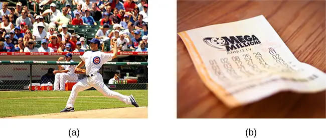
Recently, some have raised questions concerning the extent to which important life events can permanently alter people’s happiness set points (Diener, Lucas, & Scollon, 2006). Evidence from a number of investigations suggests that, in some circumstances, happiness levels do not revert to their original positions. For example, although people generally tend to adapt to marriage so that it no longer makes them happier or unhappier than before, they often do not fully adapt to unemployment or severe disabilities (Diener, 2012). Figure 14.28, which is based on longitudinal data from a sample of over 3,000 German respondents, shows life satisfaction scores several years before, during, and after various life events, and it illustrates how people adapt (or fail to adapt) to these events. German respondents did not get lasting emotional boosts from marriage; instead, they reported brief increases in happiness, followed by quick adaptation. In contrast, widows and those who had been laid off experienced sizeable decreases in happiness that appeared to result in long-term changes in life satisfaction (Diener et al., 2006). Further, longitudinal data from the same sample showed that happiness levels changed significantly over time for nearly a quarter of respondents, with 9% showing major changes (Fujita & Diener, 2005). Thus, long-term happiness levels can and do change for some people.
![A chart compares life satisfaction scores in the years before and after significant life events. Life satisfaction is steady in the five years before and after marriage. There is a gradual incline that peaks in the year of marriage and declines slightly in the years following. With respect to unemployment, life satisfaction five years before is roughly the same as it is with marriage at that time, but begins to decline sharply around 2 years before unemployment. One year after unemployment, life satisfaction has risen slightly, but then becomes steady at a much lower level than at five years before. With respect to the death of a spouse, life satisfaction five years before is about the same as marriage at that time, but steadily declines until the death, when it starts to gradually rise again. After five years, the person who has suffered the death of a spouse has roughly the same life satisfaction as the person who was unemployed.](img/cnx-psych-14-05-adaptationch.webp)
Increasing Happiness¶
Some recent findings about happiness provide an optimistic picture, suggesting that real changes in happiness are possible. For example, thoughtfully developed well-being interventions designed to augment people’s baseline levels of happiness may increase happiness in ways that are permanent and long-lasting, not just temporary. These changes in happiness may be targeted at individual, organizational, and societal levels (Diener et al., 2006). Researchers in one study found that a series of happiness interventions involving such exercises as writing down three good things that occurred each day led to increases in happiness that lasted over six months (Seligman et al., 2005).
Measuring happiness and well-being at the societal level over time may assist policy makers in determining if people are generally happy or miserable, as well as when and why they might feel the way they do. Studies show that average national happiness scores (over time and across countries) relate strongly to six key variables: per capita gross domestic product (GDP, which reflects a nation’s economic standard of living), social support, freedom to make important life choices, healthy life expectancy, freedom from perceived corruption in government and business, and generosity (Helliwell et al., 2013). Investigating why people are happy or unhappy might help policymakers develop programs that increase happiness and well-being within a society (Diener et al., 2006). Resolutions about contemporary political and social issues that are frequent topics of debate—such as poverty, taxation, affordable health care and housing, clean air and water, and income inequality—might be best considered with people’s happiness in mind.
Positive Psychology¶
In 1998, Seligman (the same person who conducted the learned helplessness experiments mentioned earlier), who was then president of the American Psychological Association, urged psychologists to focus more on understanding how to build human strength and psychological well-being. In deliberately setting out to create a new direction and new orientation for psychology, Seligman helped establish a growing movement and field of research called positive psychology (Compton, 2005). In a very general sense, positive psychology can be thought of as the science of happiness; it is an area of study that seeks to identify and promote those qualities that lead to greater fulfillment in our lives. This field looks at people’s strengths and what helps individuals to lead happy, contented lives, and it moves away from focusing on people’s pathology, faults, and problems. According to Seligman and Csikszentmihalyi (2000), positive psychology,
at the subjective level is about valued subjective experiences: well-being, contentment, and satisfaction (in the past); hope and optimism (for the future); and… happiness (in the present). At the individual level, it is about positive individual traits: the capacity for love and vocation, courage, interpersonal skill, aesthetic sensibility, perseverance, forgiveness, originality, future mindedness, spirituality, high talent, and wisdom. (p. 5)
Some of the topics studied by positive psychologists include altruism and empathy, creativity, forgiveness and compassion, the importance of positive emotions, enhancement of immune system functioning, savoring the fleeting moments of life, and strengthening virtues as a way to increase authentic happiness (Compton, 2005). Recent efforts in the field of positive psychology have focused on extending its principles toward peace and well-being at the level of the global community. In a war-torn world in which conflict, hatred, and distrust are common, such an extended “positive peace psychology” could have important implications for understanding how to overcome oppression and work toward global peace (Cohrs, Christie, White, & Das, 2013).
Dig Deeper: The Center for Investigating Healthy Minds
On the campus of the University of Wisconsin–Madison, the Center for Investigating Healthy Minds at the Waisman Center conducts rigorous scientific research on healthy aspects of the mind, such as kindness, forgiveness, compassion, and mindfulness. Established in 2008 and led by renowned neuroscientist Dr. Richard J. Davidson, the Center examines a wide range of ideas, including such things as a kindness curriculum in schools, neural correlates of prosocial behavior, psychological effects of Tai Chi training, digital games to foster prosocial behavior in children, and the effectiveness of yoga and breathing exercises in reducing symptoms of post-traumatic stress disorder.
According to its website, the Center was founded after Dr. Davidson was challenged by His Holiness, the 14th Dalai Lama, “to apply the rigors of science to study positive qualities of mind” (Center for Investigating Health Minds, 2013). The Center continues to conduct scientific research with the aim of developing mental health training approaches that help people to live happier, healthier lives.
Positive Affect and Optimism¶
Taking a cue from positive psychology, extensive research over the last 10-15 years has examined the importance of positive psychological attributes in physical well-being. Qualities that help promote psychological well-being (e.g., having meaning and purpose in life, a sense of autonomy, positive emotions, and satisfaction with life) are linked with a range of favorable health outcomes (especially improved cardiovascular health) mainly through their relationships with biological functions and health behaviors (such as diet, physical activity, and sleep quality) (Boehm & Kubzansky, 2012). The quality that has received attention is positive affect, which refers to pleasurable engagement with the environment, such as happiness, joy, enthusiasm, alertness, and excitement (Watson, Clark, & Tellegen, 1988). The characteristics of positive affect, as with negative affect (discussed earlier), can be brief, long-lasting, or trait-like (Pressman & Cohen, 2005). Independent of age, gender, and income, positive affect is associated with greater social connectedness, emotional and practical support, adaptive coping efforts, and lower depression; it is also associated with longevity and favorable physiological functioning (Steptoe, O’Donnell, Marmot, & Wardle, 2008).
Positive affect also serves as a protective factor against heart disease. In a 10-year study of Nova Scotians, the rate of heart disease was 22% lower for each one-point increase on the measure of positive affect, from 1 (no positive affect expressed) to 5 (extreme positive affect) (Davidson, Mostofsky, & Whang, 2010). In terms of our health, the expression, “don’t worry, be happy” is helpful advice indeed. There has also been much work suggesting that optimism—the general tendency to look on the bright side of things—is also a significant predictor of positive health outcomes.
Although positive affect and optimism are related in some ways, they are not the same (Pressman & Cohen, 2005). Whereas positive affect is mostly concerned with positive feeling states, optimism has been regarded as a generalized tendency to expect that good things will happen (Chang, 2001). It has also been conceptualized as a tendency to view life’s stressors and difficulties as temporary and external to oneself (Peterson & Steen, 2002). Numerous studies over the years have consistently shown that optimism is linked to longevity, healthier behaviors, fewer postsurgical complications, better immune functioning among men with prostate cancer, and better treatment adherence (Rasmussen & Wallio, 2008). Further, optimistic people report fewer physical symptoms, less pain, better physical functioning, and are less likely to be rehospitalized following heart surgery (Rasmussen, Scheier, & Greenhouse, 2009).
Flow¶
Another factor that seems to be important in fostering a deep sense of well-being is the ability to derive flow from the things we do in life. Flow is described as a particular experience that is so engaging and engrossing that it becomes worth doing for its own sake (Csikszentmihalyi, 1997). It is usually related to creative endeavors and leisure activities, but it can also be experienced by workers who like their jobs or students who love studying (Csikszentmihalyi, 1999). Many of us instantly recognize the notion of flow. In fact, the term derived from respondents’ spontaneous use of the term when asked to describe how it felt when what they were doing was going well. When people experience flow, they become involved in an activity to the point where they feel they lose themselves in the activity. They effortlessly maintain their concentration and focus, they feel as though they have complete control of their actions, and time seems to pass more quickly than usual (Csikszentmihalyi, 1997). Flow is considered a pleasurable experience, and it typically occurs when people are engaged in challenging activities that require skills and knowledge they know they possess. For example, people would be more likely to report flow experiences in relation to their work or hobbies than in relation to eating. When asked the question, “Do you ever get involved in something so deeply that nothing else seems to matter, and you lose track of time?” about 20% of Americans and Europeans report having these flow-like experiences regularly (Csikszentmihalyi, 1997).
Although wealth and material possessions are nice to have, the notion of flow suggests that neither are prerequisites for a happy and fulfilling life. Finding an activity that you are truly enthusiastic about, something so absorbing that doing it is reward itself (whether it be playing tennis, studying Arabic, writing children’s novels, or cooking lavish meals) is perhaps the real key. According to Csikszentmihalyi (1999), creating conditions that make flow experiences possible should be a top social and political priority. How might this goal be achieved? How might flow be promoted in school systems? In the workplace? What potential benefits might be accrued from such efforts?
In an ideal world, scientific research endeavors should inform us on how to bring about a better world for all people. The field of positive psychology promises to be instrumental in helping us understand what truly builds hope, optimism, happiness, healthy relationships, flow, and genuine personal fulfillment.
Chapter Review¶
Key Terms¶
- alarm reaction
- first stage of the general adaptation syndrome; characterized as the body’s immediate physiological reaction to a threatening situation or some other emergency; analogous to the fight-or-flight response
- asthma
- psychophysiological disorder in which the airways of the respiratory system become obstructed, leading to great difficulty expelling air from the lungs
- biofeedback
- stress-reduction technique using electronic equipment to measure a person’s involuntary (neuromuscular and autonomic) activity and provide feedback to help the person gain a level of voluntary control over these processes
- cardiovascular disorders
- disorders that involve the heart and blood circulation system
- coping
- mental or behavioral efforts used to manage problems relating to stress, including its cause and the unpleasant feelings and emotions it produces
- cortisol
- stress hormone released by the adrenal glands when encountering a stressor; helps to provide a boost of energy, thereby preparing the individual to take action
- daily hassles
- minor irritations and annoyances that are part of our everyday lives and are capable of producing stress
- distress
- bad form of stress; usually high in intensity; often leads to exhaustion, fatigue, feeling burned out; associated with erosions in performance and health
- eustress
- good form of stress; low to moderate in intensity; associated with positive feelings, as well as optimal health and performance
- fight-or-flight response
- set of physiological reactions (increases in blood pressure, heart rate, respiration rate, and sweat) that occur when an individual encounters a perceived threat; these reactions are produced by activation of the sympathetic nervous system and the endocrine system
- flow
- state involving intense engagement in an activity; usually is experienced when participating in creative, work, and leisure endeavors
- general adaptation syndrome
- Hans Selye’s three-stage model of the body’s physiological reactions to stress and the process of stress adaptation: alarm reaction, stage of resistance, and stage of exhaustion
- happiness
- enduring state of mind consisting of joy, contentment, and other positive emotions; the sense that one’s life has meaning and value
- health psychology
- subfield of psychology devoted to studying psychological influences on health, illness, and how people respond when they become ill
- heart disease
- several types of adverse heart conditions, including those that involve the heart’s arteries or valves or those involving the inability of the heart to pump enough blood to meet the body’s needs; can include heart attack and stroke
- hypertension
- high blood pressure
- hypothalamic-pituitary-adrenal (HPA) axis
- set of structures found in both the limbic system (hypothalamus) and the endocrine system (pituitary gland and adrenal glands) that regulate many of the body’s physiological reactions to stress through the release of hormones
- immune system
- various structures, cells, and mechanisms that protect the body from foreign substances that can damage the body’s tissues and organs
- immunosuppression
- decreased effectiveness of the immune system
- job burnout
- general sense of emotional exhaustion and cynicism in relation to one’s job; consists of three dimensions: exhaustion, depersonalization, and sense of diminished personal accomplishment
- job strain
- work situation involving the combination of excessive job demands and workload with little decision making latitude or job control
- lymphocytes
- white blood cells that circulate in the body’s fluids and are especially important in the body’s immune response
- negative affectivity
- tendency to experience distressed emotional states involving anger, contempt, disgust, guilt, fear, and nervousness
- optimism
- tendency toward a positive outlook and positive expectations
- perceived control
- peoples’ beliefs concerning their capacity to influence and shape outcomes in their lives
- positive affect
- state or a trait that involves pleasurable engagement with the environment, the dimensions of which include happiness, joy, enthusiasm, alertness, and excitement
- positive psychology
- scientific area of study seeking to identify and promote those qualities that lead to happy, fulfilled, and contented lives
- primary appraisal
- judgment about the degree of potential harm or threat to well-being that a stressor might entail
- psychoneuroimmunology
- field that studies how psychological factors (such as stress) influence the immune system and immune functioning
- psychophysiological disorders
- physical disorders or diseases in which symptoms are brought about or worsened by stress and emotional factors
- relaxation response technique
- stress reduction technique combining elements of relaxation and meditation
- secondary appraisal
- judgment of options available to cope with a stressor and their potential effectiveness
- Social Readjustment Rating Scale (SRRS)
- popular scale designed to measure stress; consists of 43 potentially stressful events, each of which has a numerical value quantifying how much readjustment is associated with the event
- social support
- soothing and often beneficial support of others; can take different forms, such as advice, guidance, encouragement, acceptance, emotional comfort, and tangible assistance
- stage of exhaustion
- third stage of the general adaptation syndrome; the body’s ability to resist stress becomes depleted; illness, disease, and even death may occur
- stage of resistance
- second stage of the general adaptation syndrome; the body adapts to a stressor for a period of time
- stress
- process whereby an individual perceives and responds to events that one appraises as overwhelming or threatening to one’s well-being
- stressors
- environmental events that may be judged as threatening or demanding; stimuli that initiate the stress process
- Type A
- psychological and behavior pattern exhibited by individuals who tend to be extremely competitive, impatient, rushed, and hostile toward others
- Type B
- psychological and behavior pattern exhibited by a person who is relaxed and laid back
Summary¶
14.1 What Is Stress?¶
Stress is a process whereby an individual perceives and responds to events appraised as overwhelming or threatening to one’s well-being. The scientific study of how stress and emotional factors impact health and well-being is called health psychology, a field devoted to studying the general impact of psychological factors on health. The body’s primary physiological response during stress, the fight-or-flight response, was first identified in the early 20th century by Walter Cannon. The fight-or-flight response involves the coordinated activity of both the sympathetic nervous system and the hypothalamic-pituitary-adrenal (HPA) axis. Hans Selye, a noted endocrinologist, referred to these physiological reactions to stress as part of general adaptation syndrome, which occurs in three stages: alarm reaction (fight-or-flight reactions begin), resistance (the body begins to adapt to continuing stress), and exhaustion (adaptive energy is depleted, and stress begins to take a physical toll).
14.2 Stressors¶
Stressors can be chronic (long term) or acute (short term), and can include traumatic events, significant life changes, daily hassles, and situations in which people are frequently exposed to challenging and unpleasant events. Many potential stressors include events or situations that require us to make changes in our lives, such as a divorce or moving to a new residence. Thomas Holmes and Richard Rahe developed the Social Readjustment Rating Scale (SRRS) to measure stress by assigning a number of life change units to life events that typically require some adjustment, including positive events. Although the SRRS has been criticized on a number of grounds, extensive research has shown that the accumulation of many LCUs is associated with increased risk of illness. Many potential stressors also include daily hassles, which are minor irritations and annoyances that can build up over time. In addition, jobs that are especially demanding, offer little control over one’s working environment, or involve unfavorable working conditions can lead to job strain, thereby setting the stage for job burnout.
14.3 Stress and Illness¶
Psychophysiological disorders are physical diseases that are either brought about or worsened by stress and other emotional factors. One of the mechanisms through which stress and emotional factors can influence the development of these diseases is by adversely affecting the body’s immune system. A number of studies have demonstrated that stress weakens the functioning of the immune system. Cardiovascular disorders are serious medical conditions that have been consistently shown to be influenced by stress and negative emotions, such as anger, negative affectivity, and depression. Other psychophysiological disorders that are known to be influenced by stress and emotional factors include asthma and tension headaches.
14.4 Regulation of Stress¶
When faced with stress, people must attempt to manage or cope with it. In general, there are two basic forms of coping: problem-focused coping and emotion-focused coping. Those who use problem-focused coping strategies tend to cope better with stress because these strategies address the source of stress rather than the resulting symptoms. To a large extent, perceived control greatly impacts reaction to stressors and is associated with greater physical and mental well-being. Social support has been demonstrated to be a highly effective buffer against the adverse effects of stress. Extensive research has shown that social support has beneficial physiological effects for people, and it seems to influence immune functioning. However, the beneficial effects of social support may be related to its influence on promoting healthy behaviors.
14.5 The Pursuit of Happiness¶
Happiness is conceptualized as an enduring state of mind that consists of the capacity to experience pleasure in daily life, as well as the ability to engage one’s skills and talents to enrich one’s life and the lives of others. Although people around the world generally report that they are happy, there are differences in average happiness levels across nations. Although people have a tendency to overestimate the extent to which their happiness set points would change for the better or for the worse following certain life events, researchers have identified a number of factors that are consistently related to happiness. In recent years, positive psychology has emerged as an area of study seeking to identify and promote qualities that lead to greater happiness and fulfillment in our lives. These components include positive affect, optimism, and flow.
References¶
References
Aboa-Éboulé, C., Brisson, C., Maunsell, E., Mâsse, B., Bourbonnais, R., Vézina, M., . . . Dagenais, G. R. (2007). Job strain and risk for acute recurrent coronary heart disease events. Journal of the American Medical Association, 298, 1652–1660.
Abramson, L. Y., Seligman, M. E. P., & Teasdale, J. D. (1978). Learned helplessness in humans: Critique and reformulation. Journal of Abnormal Psychology, 87, 49–74.
Ader, R. & Cohen, N. (2001). Conditioning and immunity. In R. Ader, D. L. Felten & N. Cohen (Eds.), Psychoneuroimmunology (3rd ed., pp. 3–34). Academic Press.
Ader, R., & Cohen, N. (1975). Behaviorally conditioned immunosuppression. Psychosomatic Medicine, 37, 333–340.
Ahola, K., Honkonen, T., Isometsä, E., Kalimo, R., Nykyri, E., Aromaa, A., & Lönnqvist, J. (2005). The relationship between job-related burnout and depressive disorders—Results from the Finnish Health 2000 study. Journal of Affective Disorders, 88, 55–62.
Ahola, K., Honkonen, T., Kivamäki, M., Virtanen, M., Isometsä, E., Aromaa, A., & Lönnqvist, J. (2006). Contribution of burnout to the association between job strain and depression: The Health 2000 study. Journal of Occupational and Environmental Medicine, 48, 1023–1030.
Ajrouch, K. J., Reisine, S., Lim, S., Sohn, W., & Ismail, A. (2010). Perceived everyday discrimination and psychological distress: Does social support matter? Ethnicity & Health, 15(4), 417–434. https://www.tandfonline.com/doi/abs/10.1080/13557858.2010.484050
American Academy of Neurology. (2014). Headache. https://patients.aan.com/disorders/index.cfm?event=view&disorder_id=936
American Heart Association. (2012a). What is angina? http://www.heart.org/idc/groups/heart-public/@wcm/@hcm/documents/downloadable/ucm_300287.pdf
American Heart Association. (2012b). Why blood pressure matters. http://www.heart.org/HEARTORG/Conditions/HighBloodPressure/ WhyBloodPressureMatters/Why-Blood-Pressure-Matters_UCM_002051_Article.jsp
American Heart Association. (2014, February 24). Depression as a risk factor for poor prognosis among patients with acute coronary syndrome: Systematic review and recommendations: A scientific statement from the American Heart Association. Circulation. http://circ.ahajournals.org/content/early/2014/02/24/CIR.0000000000000019.full.pdf+html
American Lung Association. (2010). Asthma. http://www.lung.org/assets/documents/publications/solddc-chapters/asthma.pdf
American Psychiatric Association. (2013). Diagnostic and statistical manual of mental disorders (5th ed.). Author.
Bandura, A. (1994). Self-efficacy. In V. S. Ramachandran (Ed.), Encyclopedia of human behavior (Vol. 4, pp. 71–81). Academic Press.
Bandura, A. (1997). Self-efficacy: The exercise of control. Freeman.
Bandura, A. (2004). Health promotion by social cognitive means. Health Education & Behavior, 31, 143–164.
Barefoot, J. C., & Schroll, M. S. (1996). Symptoms of depression, acute myocardial infarction, and total mortality in a community sample. Circulation, 93, 1976–1980.
Baron, R. S., & Kerr, N. L. (2003). Group process, group decision, group action (2nd ed.). Open University Press.
Baron, R. S., Cutrona, C. E., Hicklin, D., Russell, D. W., & Lubaroff, D. M. (1990). Social support and immune function among spouses of cancer patients. Journal of Personality and Social Psychology, 59, 344–352.
Baumeister, R. F., & Leary, M. R. (1995). The need to belong: Desire for interpersonal attachments as a fundamental human motivation. Psychological Bulletin, 117, 497–529.
Benson, H., & Proctor, W. (1994). Beyond the relaxation response: How to harness the healing power of your personal beliefs. Berkley Publishing Group.
Berkman, L. F., & Syme, L. (1979). Social networks, host resistance, and mortality: A nine-year follow-up study of Alameda County residents. American Journal of Epidemiology, 109, 186–204.
Blackburn, E. H., & Epel, E. S. (2012). Telomeres and adversity: Too toxic to ignore. Nature, 490(7419), 169–171.
Boehm, J. K., & Kubzansky, L. D. (2012). The heart’s content: The association between positive psychological well-being and cardiovascular health. Psychological Bulletin, 138, 655–691.
Bolger, N., DeLongis, A., Kessler, R. C., & Schilling, E. A. (1989). Effects of daily stress on negative mood. Journal of Personality and Social Psychology, 57, 808–818.
Boyle, S. H., Michalek, J. E., & Suarez, E. C. (2006). Covariation of psychological attributes and incident coronary heart disease in U.S. Air Force veterans of the Vietnam War. Psychosomatic Medicine, 68, 844–850.
Brickman, P., & Campbell, D. T. (1971). Hedonic relativism and planning the good society. In M. H. Appley (Ed.), Adaptation level theory: A symposium (pp. 287–302). Academic Press.
Brickman, P., Coats, D., & Janoff-Bulman, R. (1978). Lottery winners and accident victims: Is happiness relative? Journal of Personality and Social Psychology, 36, 917–927.
Brummett, B. H., Barefoot, J. C., Siegler, I. C., Clapp-Channing, N. E., Lytle, B. L., Bosworth, H. B., . . . Mark, D. B. (2001). Characteristics of socially isolated patients with coronary artery disease who are at elevated risk for mortality. Psychosomatic Medicine, 63, 267–272.
Caceres, C., & Burns, J. W. (1997). Cardiovascular reactivity to psychological stress may enhance subsequent pain sensitivity. Pain, 69, 237–244.
Campeau, S., Nyhuis, T. J., Sasse, S. K., Kryskow, E. M., Herlihy, L., Masini, C. V., . . . Day, H. E. W. (2010). Hypothalamic pituitary adrenal axis responses to low-intensity stressors are reduced after voluntary wheel running in rats. Journal of Neuroendocrinology, 22, 872–888.
Cannon, W. B. (1932). The wisdom of the body. W. W. Norton.
Carroll, J. (2007). Most Americans “very satisfied” with their personal lives. Gallup. http://www.gallup.com/poll/103483/Most-Americans-Very-Satisfied-Their-Personal-Lives.aspx
Cathcart, S., Petkov, J., & Pritchard, D. (2008). Effects of induced stress on experimental pain sensitivity in chronic tension-type headache sufferers. European Journal of Neurology, 15, 552–558.
Centers for Disease Control and Prevention (CDC). (2006). You can control your asthma: A guide to understanding asthma and its triggers. http://www.cdc.gov/asthma/pdfs/asthma_brochure.pdf
Centers for Disease Control and Prevention (CDC). (2011). Million hearts: Strategies to reduce the prevalence of leading cardiovascular disease risk factors—United States, 2011. Morbidity and Mortality Weekly Report [MMWR], 60(36), 1248–1251. http://www.cdc.gov/mmwr/pdf/wk/mm6036.pdf
Centers for Disease Control and Prevention (CDC). (2013a). Asthma’s impact on the nation: Data from the CDC National Asthma Control Program. http://www.cdc.gov/asthma/impacts_nation/AsthmaFactSheet.pdf
Centers for Disease Control and Prevention (CDC). (2013b). Breathing easier. http://www.cdc.gov/asthma/pdfs/breathing_easier_brochure.pdf
Center for Investigating Health Minds. (2013). About. http://www.investigatinghealthyminds.org/cihmCenter.html
Chandola, T., Britton, A., Brunner, E., Hemingway, H., Malik, M., Kumari, M., . . . Marmot, M. (2008). Work stress and coronary heart disease: What are the mechanisms? European Heart Journal, 29, 640–648.
Chang, E. C. (2001). Introduction: Optimism and pessimism and moving beyond the most fundamental questions. In E. C. Chang (Ed.), Optimism and pessimism: Implications for theory, research, and practice (pp. 3–12). American Psychological Association.
Chang, P. P., Ford, D. E., Meoni, L. A., Wang, N. Y., & Klag, M. J. (2002). Anger in young and subsequent premature cardiovascular disease. Archives of Internal Medicine, 162, 901–906.
Chida, Y., & Steptoe, A. (2009). The association of anger and hostility with future coronary heart disease: A meta-analytic review or prospective evidence. Journal of the American College of Cardiology, 53, 936–946.
Cohen, S., Frank, E., Doyle, W. J., Skoner, D. P., Rabin, B. S., & Gwaltney, J. M. J. (1998). Types of stressors that increase susceptibility to the common cold in healthy adults. Health Psychology, 17, 214–223.
Cohen, S., & Herbert, T. B. (1996). Health psychology: Psychological factors and physical disease from the perspective of human psychoneuroimmunology. Annual Review of Psychology, 47, 113–142.
Cohen, S., & Janicki-Deverts, D. (2012). Who’s stressed? Distributions of psychological stress in the United States in probability samples in 1993, 2006, and 2009. Journal of Applied Social Psychology, 42, 1320–1334.
Cohen, S., Janicki-Deverts, D., & Miller, G. E. (2007). Psychological distress and disease. Journal of the American Medical Association, 98, 1685–1687.
Cohen, S., Doyle, W. J., Turner, R., Alper, C. M., & Skoner, D. P. (2003). Sociability and susceptibility to the common cold. Psychological Science, 14, 389–395.
Cohrs, J. C., Christie, D. J., White, M. P., & Das, C. (2013). Contributions of positive psychology to peace: Toward global well-being and resilience. American Psychologist, 68, 590–600.
Compton, W. C. (2005). An introduction to positive psychology. Thomson Wadsworth.
Cotton, D. H. G. (1990). Stress management: An integrated approach to therapy. Brunner/Mazel.
Craft, L. L., VanIterson, E. H., Helenowski, I. B., Rademaker, A. W., & Courneya, K. S. (2012). Exercise effects on depressive symptoms in cancer survivors: A systematic review and meta-analysis. Cancer Epidemiology, Biomarkers & Prevention, 21, 3–19.
Csikszentmihalyi, M. (1997). Finding flow. Basic Books.
Csikszentmihalyi, M. (1999). If we are so rich, why aren’t we happy? American Psychologist, 54, 821–827.
D’Amato, G., Liccardi, G., Cecchi, L., Pellegrino, F., & D’Amato, M. (2010). Facebook: A new trigger for asthma? The Lancet, 376, 1740.
Davidson, K. W., Mostofsky, E., & Whang, W. (2010). Don’t worry: be happy: Positive affect and reduced 10-year incident coronary heart disease: The Canadian Nova Scotia Health Survey. European Heart Journal, 31, 1065–1070.
de Kluizenaar, Y., Gansevoort, R. T., Miedema, H. M. E., & de Jong, P. E. (2007). Hypertension and road traffic noise exposure. Journal of Occupational and Environmental Medicine, 49, 484–492.
De Vogli, R., Chandola, T., & Marmot, M. G. (2007). Negative aspects of close relationships and heart disease. Archives of Internal Medicine, 167, 1951–1957.
DeLongis, A., Coyne, J. C., Dakof, G., Folkman, S., & Lazarus, R. S. (1982). Relationship of daily hassles, uplifts, and major life events to health status. Health Psychology, 1, 119–136.
Derogatis, L. R., & Coons, H. L. (1993). Self-report measures of stress. In L. Goldberger & S. Breznitz (Eds.), Handbook of stress: Theoretical and clinical aspects (2nd ed., pp. 200–233). Free Press.
Diehl, M., & Hay, E. L. (2010). Risk and resilience factors in coping with daily stress in adulthood: The role of age, self-concept incoherence, and personal control. Developmental Psychology, 46, 1132–1146.
Diener, E. (2012). New findings and future directions for subjective well-being research. American Psychologist, 67, 590–597.
Diener, E. (2013). The remarkable changes in the science of subjective well-being. Perspectives on Psychological Science, 8, 663–666.
Diener, E., & Biswas-Diener, R. (2002). Will money increase subjective well-being? A literature review and guide to needed research. Social Indicators Research, 57, 119–169.
Diener, E., Diener, M., & Diener, C. (1995). Factors predicting the subjective well-being of nations. Journal of Personality and Social Psychology, 69, 851–864.
Diener, E., Lucas, R., & Scollon, C. N. (2006). Beyond the hedonic treadmill: Revising the adaptation theory of well-being. American Psychologist, 61, 305–314.
Diener, E., Ng, W., Harter, J., & Arora, R. (2010). Wealth and happiness across the world: Material prosperity predicts life evaluation, whereas psychosocial prosperity predicts positive feelings. Journal of Personality and Social Psychology, 99, 52–61.
Diener, E., Oishi, S., & Ryan, K. L. (2013). Universals and cultural differences in the causes and structure of happiness: A multilevel review. In Mental Well-Being (pp. 153–176). Springer Netherlands.
Diener, E., Suh, E. M., Lucas, R. E., & Smith, H. L. (1999). Subjective well-being: Three decades of progress. Psychological Bulletin, 125, 276–302.
Diener, E., Tay, L., & Myers, D. (2011). The religion paradox: If religion makes people happy, why are so many dropping out? Journal of Personality and Social Psychology, 101, 1278–1290.
Diener, E., Tay, L., & Oishi, S. (2013). Rising income and the subjective well-being of nations. Journal of Personality and Social Psychology, 104, 267–276.
Diener, E., Wolsic, B., & Fujita, F. (1995). Physical attractiveness and subjective well-being. Journal of Personality and Social Psychology, 69, 120–129.
Dohrenwend, B. P. (2006). Inventorying stressful life events as risk factors for psychopathology: Toward resolution of the problem of intracategory variability. Psychological Bulletin, 132, 477–495.
Entringer, S., Epel, E. S., Kumsta, R., Lin, J., Hellhammer, D. H., Blackburn, E., Wüst, S., & Wadhwa, P. D. (2011). Stress exposure in intrauterine life is associated with shorter telomere length in young adulthood. Proceedings of the National Academy of Sciences, USA, 108, E513–E518.
Epel, E. S., Blackburn, E. H., Lin, J., Dhabhar, F. S., Adler, N. E., Morrow, J. D., & Cawthon, R. M. (2004). Accelerated telomere shortening in response to life stress. Proceedings of the National Academy of Sciences, USA, 101, 17312–17315.
Everly, G. S., & Lating, J. M. (2002). A clinical guide to the treatment of the human stress response (2nd ed.). Kluwer Academic/Plenum Publishing.
Falagas, M. E., Zarkadoulia, E. A., Ioannidou, E. N., Peppas, G., Christodoulou, C., & Rafailidis, P. I. (2007). The effect of psychosocial factors on breast cancer outcome: A systematic review. Breast Cancer Research, 9:R44. http://breast-cancer-research.com/content/pdf/bcr1744.pdf
Folkman, S., & Lazarus, R. S. (1980). An analysis of coping in a middle-aged community sample. Journal of Health and Social Behavior, 21, 219–239.
Fontana, A. M., Diegnan, T., Villeneuve, A., & Lepore, S. J. (1999). Nonevaluative social support reduces cardiovascular reactivity in young women during acutely stressful performance situations. Journal of Behavioral Medicine, 22, 75–91.
Friedman, H. S., & Booth-Kewley, S. (1987). The “disease-prone personality”: A meta-analytic view of the construct. American Psychologist, 42, 539–555.
Friedman, M. (1977). Type A behavior pattern: Some of its pathophysiological components. Bulletin of the New York Academy of Medicine, 53, 593–604.
Friedman, M., & Rosenman, R. (1974). Type A behavior and your heart. Alfred A. Knopf.
Friedman, M., & Rosenman, R. H. (1959). Association of specific overt behavior pattern with blood and cardiovascular findings blood cholesterol level, blood clotting time, incidence of arcus senilis, and clinical coronary artery disease. Journal of the American Medical Association, 169(12), 1286–1296.
Fujita, F., & Diener, E. (2005). Life satisfaction set point: Stability and change. Journal of Personality and Social Psychology, 88, 158–164.
Fulmer, C. A., Gelfand, M. J., Kruglanski, A., Kim-Prieto, C., Diener, E., Pierro, A., & Higgins, E. T. (2010). On “feeling right” in cultural contexts: How person-culture match affects self-esteem and subjective well-being. Psychological Science, 21, 1563–1569.
Geoffroy, M. C., Hertzman, C., Li, L., & Power, C. (2013). Prospective association of morning salivary cortisol with depressive symptoms in mid-life: A life-course study. PLoS ONE, 8(11), 1–9.
Gerber, M., Kellman, M., Hartman, T., & Pühse, U. (2010). Do exercise and fitness buffer against stress among Swiss police and emergency response service officers? Psychology of Sport and Exercise, 11, 286–294.
Glaser, R., & Kiecolt-Glaser, J. K. (2005). Stress-induced immune dysfunction: Implications for health. Nature Reviews Immunology, 5, 243–251.
Glaser, R., Kiecolt-Glaser, J. K., Marucha, P. T., MacCallum, R. C., Laskowski, B. F., & Malarkey, W. B. (1999). Stress-related changes in proinflammatory cytokine production in wounds. Archives of General Psychiatry, 56, 450–456.
Glassman, A. H. (2007). Depression and cardiovascular comorbidity. Dialogues in Clinical Neuroscience, 9, 9–17.
Glassman, A. H., & Shapiro, P. A. (1998). Depression and the course of coronary artery disease. American Journal of Psychiatry, 155, 4–11.
Greenberg, J. S. (2006). Comprehensive stress management (9th ed.). McGraw-Hill.
Hackney, C. H., & Sanders, G. S. (2003). Religiosity and mental health: A meta-analysis of recent studies. Journal for the Scientific Study of Religion, 42, 43–55.
Hafeez, H., Zeshan, M., Tahir, M. A., Jahan, N., & Naveed, S. (2017). Health care disparities among lesbian, gay, bisexual, and transgender youth: A literature review. Cureus, 9(4). https://www.ncbi.nlm.nih.gov/pubmed/28638747
Hansen, T. (2012). Parenthood and happiness: A review of folk theories versus empirical evidence. Social Indicators Research, 108, 29–64.
Hare, D. L., Toukhsati, S. R., Johansson, P., & Jaarsma, T. (2013). Depression and cardiovascular disease: A clinical review. European Heart Journal. Advance online publication. doi:10.1093/eurheartj/eht462
Hatch, S. L., & Dohrenwend, B. P. (2007). Distribution of traumatic and other stressful life events by race/ethnicity, gender, SES, and age: A review of the research. American Journal of Community Psychology, 40, 313–332.
Haynes, S. G., Feinleib, M., & Kannel, W. B. (1980). The relationship of psychosocial factors to coronary disease in the Framingham study: III. Eight-year incidence of coronary heart disease. American Journal of Epidemiology, 111, 37–58.
Head, D., Singh, T., & Bugg, J. M. (2012). The moderating role of exercise on stress-related effects on the hippocampus and memory in later adulthood. Neuropsychology, 26, 133–143.
Helliwell, J., Layard, R., & Sachs, J. (Eds.). (2013). World happiness report 2013. United Nations Sustainable Development Solutions Network: http://unsdsn.org/wp-content/uploads/2014/02/WorldHappinessReport2013_online.pdf
Helson, H. (1964). Current trends and issues in adaptation-level theory. American Psychologist, 19, 26–38.
Holmes, T. H., & Masuda, M. (1974). Life change and illness susceptibility. In B. S. Dohrenwend & B. P. Dohrenwend (Eds.), Stressful life events: Their nature and effects (pp. 45–72). John Wiley & Sons.
Holmes, T. H., & Rahe, R. H. (1967). The social readjustment rating scale. Journal of Psychosomatic Research, 11, 213–218.
Holmes, T. S., & Holmes, T. H. (1970). Short-term intrusions into the life style routine. Journal of Psychosomatic Research, 14, 121–132.
Holt-Lunstad, J., Smith, T. B., & Layton, J. B. (2010). Social relationships and mortality risk: A meta-analytic review. PLoS Medicine, 7(7), e1000316.
Hunt, M. G., Marx, R., Lipson, C., & Young, J. (2018). No more FOMO: Limiting social media decreases loneliness and depression. Journal and Social and Clinical Psychology, 37(10), 751–768. https://guilfordjournals.com/doi/abs/10.1521/jscp.2018.37.10.751
Hupbach, A., & Fieman, R. (2012). Moderate stress enhances immediate and delayed retrieval of educationally relevant material in healthy young men. Behavioral Neuroscience, 126, 819–825.
Infurna, F. J., & Gerstorf, D. (2014). Perceived control relates to better functional health and lower cardio-metabolic risk: The mediating role of physical activity. Health Psychology, 33, 85–94.
Infurna, F. J., Gerstorf, D., Ram, N., Schupp, J., & Wagner, G. G. (2011). Long-term antecedents and outcomes of perceived control. Psychology and Aging, 26, 559–575.
Johnson, W., & Krueger, R. F. (2006). How money buys happiness: Genetic and environmental processes linking finances and life satisfaction. Journal of Personality and Social Psychology, 90, 680–691.
Jonas, B. S., & Lando, J. F. (2000). Negative affect as a prospective risk factor for hypertension. Psychosomatic Medicine, 62, 188–196.
Jordan, H. T., Miller-Archie, S. A., Cone, J. E., Morabia, A., & Stellman, S. D. (2011). Heart disease among those exposed to the September 11, 2001 World Trade Center disaster: Results from the World Trade Center Health Registry. Preventive Medicine: An International Journal Devoted to Practice and Theory, 53, 370–376.
Kahneman, D. (2011). Thinking fast and slow. Farrar, Straus, & Giroux.
Kahneman, D., & Deaton, A. (2010). High income improves evaluation of life, but not emotional well-being. Proceedings of the National Academy of Sciences, USA, 107, 16489–16493.
Kanner, A. D., Coyne, J. C., Schaefer, C., & Lazarus, R. S. (1981). Comparison of two modes of stress measurement: Daily hassles and uplifts versus major life events. Journal of Behavioral Medicine, 4, 1–39.
Karasek, R., & Theorell, T. (1990). Healthy work: Stress, productivity, and the reconstruction of working life. Basic Books.
Kiecolt-Glaser, J. K. (2009). Psychoneuroimmunology: Psychology’s gateway to the biomedical future. Perspectives on Psychological Science, 4, 367–369.
Kiecolt-Glaser, J. K., Glaser, R., Gravenstein, S., Malarkey, W. B., & Sheridan, J., (1996). Chronic stress alters the immune response to influenza virus vaccine in older adults. Proceedings of the National Academy of Sciences, USA, 93, 3043–3047.
Kiecolt-Glaser, J. K., McGuire, L., Robles, T. F., & Glaser, R. (2002). Psychoneuroimmunology and psychosomatic medicine: Back to the future. Psychosomatic Medicine, 64, 15–28.
Kiecolt-Glaser, J. K., McGuire, L., Robles, T. F., & Glaser, R. (2002).Psychoneuroimmunology: Psychological influences on immune function and health. Journal of Consulting and Clinical Psychology, 70, 537–547.
Kilpeläinen, M., Koskenvuo, M., Helenius, H., & Terho, E. O. (2002). Stressful life events promote the manifestation of asthma and atopic diseases. Clinical and Experimental Allergy, 32, 256–263.
Kivimäki, M., Head, J., Ferrie, J. E., Shipley, M. J., Brunner, E., Vahtera, J., & Marmot, M. G. (2006). Work stress, weight gain and weight loss. Evidence for bidirectional effects of body mass index in the Whitehall II study. International Journal of Obesity, 30, 982–987.
Klinnert, M. D., Nelson, H. S., Price, M. R., Adinoff, A. D., Leung, M., & Mrazek, D. A. (2001). Onset and persistence of childhood asthma: Predictors from infancy. Pediatrics, 108, E69.
Konnikova, M. (2015, January 14). Trying to cure depression, but inspiring torture. The New Yorker. https://www.newyorker.com/science/maria-konnikova/theory-psychology-justified-torture?verso=true
Kraus, M. W., Piff, P. K., Mendoza-Denton, R., Rheinschmidt, M. L., & Keltner, D. (2012). Social class, solipsism, and contextualism: How the rich are different from the poor. Psychological Review, 119, 546–572.
Krosnick, J. A. (1990). Thinking about politics: Comparisons of experts and novices. Guilford.
Krumboltz, M. (2014, February 18). Just like us? Elephants comfort each other when they’re stressed out. Yahoo News. http://news.yahoo.com/elephants-know-a-thing-or-two-about-empathy-202224477.html
Lachman, M. E., & Weaver, S. L. (1998). The sense of control as a moderator of social class differences in health and well-being. Journal of Personality and Social Psychology, 74, 763–773.
Lavner, J. A., Karney, B. R., & Bradbury, T. N. (2013). Newlyweds’ optimistic forecasts of their marriage: For better or for worse? Journal of Family Psychology, 27, 531–540.
Lazarus, R. P., & Folkman, S. (1984). Stress, appraisal, and coping. Springer.
Lee, M., & Rotheram-Borus, M. J. (2001). Challenges associated with increased survival among parents living with HIV. American Journal of Public Health, 91, 1303–1309.
Lehrer, P. M., Isenberg, S., & Hochron, S. M. (1993). Asthma and emotion: A review. Journal of Asthma, 30, 5–21.
Lepore, S. J. (1998). Problems and prospects for the social support-reactivity hypothesis. Annals of Behavioral Medicine, 20, 257–269.
Lichtman, J. H., Bigger, T., Blumenthal, J. A., Frasure-Smith, N., Kaufmann, P. G., Lespérance, F., . . . Froelicher, E. S. (2008). Depression and coronary heart disease: Recommendations for screening, referral, and treatment: A science advisory from the American Heart Association Prevention Committee of the Council on Cardiovascular Nursing, Council on Clinical Cardiology, Council on Epidemiology and Prevention, and Interdisciplinary Council on Quality of Care and Outcomes Research. Circulation, 118, 1768–1775.
Loerbroks, A., Apfelbacher, C. J., Thayer, J. F., Debling, D., & Stürmer, T. (2009). Neuroticism, extraversion, stressful life events and asthma: A cohort study of middle-aged adults. Allergy, 64, 1444–1450.
Logan H., Lutgendorf, S., Rainville, P., Sheffield, D., Iverson, K., & Lubaroff, D. (2001). Effects of stress and relaxation on capsaicin-induced pain. The Journal of Pain, 2, 160–170.
Lutter, M. (2007). Book review: Winning a lottery brings no happiness. Journal of Happiness Studies, 8, 155–160.
Lyon, B. L. (2012). Stress, coping, and health. In V. H. Rice (Ed.), Handbook of stress, coping, and health: Implications for nursing research, theory, and practice (2nd ed., pp. 2–20). Sage.
Lyubomirsky, S. (2001). Why are some people happier than others? The role of cognitive and motivational processes in well-being. American Psychologist, 56, 239–249.
Lyubomirsky, S., King, L., & Diener, E. (2005). The benefits of frequent positive affect: Does happiness lead to success? Psychological Bulletin, 131, 803–855.
Maier, S. F., Watkins, L. R., & Fleshner, M. (1994). Psychoneuroimmunology: The interface between behavior, brain, and immunity. American Journal of Psychology 49(12), 1004–1017.
Malzberg, B. (1937). Mortality among patients with involution melancholia. American Journal of Psychiatry, 93, 1231–1238.
Manuel, J. I. (2018). Racial/ethnic and gender disparities in health care use and access. Health Services Research 53(3), 1407–1429. https://www.ncbi.nlm.nih.gov/pmc/articles/PMC5980371/
Marmot, M. G., Bosma, H., Hemingway, H., & Stansfeld, S. (1997). Contribution of job control and other risk factors to social variations in coronary heart disease incidence. The Lancet, 350, 235–239.
Marmot, M. G. & Sapolsky, R. (2014). Of baboons and men: Social circumstances, biology, and the social gradient in health. In M. Weinstein, & M. A. Lane (Eds.), Sociality, hierarchy, health: comparative biodemography, A collection of papers (pp. 365–388). National Academies Press (US).
Martin, M. W. (2012). Happiness and the good life. Oxford University Press.
Maslach, C., & Jackson, S. E. (1981). The measurement of experienced burnout. Journal of Occupational Behavior, 2, 99–113.
McCarthy, J. (2020, January 10). Happiness not quite as widespread as usual in the U.S. Gallup. https://news.gallup.com/poll/276503/happiness-not-quite-widespread-usual.aspx
McEwan, B. (1998). Protective and damaging effects of stress mediators. New England Journal of Medicine, 338(3), 171–179.
McIntosh, J. (2014, July 28) What are headaches? What causes headaches? Medical News Today. http://www.medicalnewstoday.com/articles/73936.php
MedicineNet. (2013). Headaches. http://www.medicinenet.com/tension_headache/article.htm#what_causes_tension_headaches
Monat, A., & Lazarus, R. S. (1991). Stress and coping: An anthology (3rd ed.). Columbia University Press.
Myers, D. G. (2000). The funds, friends, and faith of happy people. American Psychologist, 55, 56–67.
Myers, T. C., Wittrock, D. A., & Foreman, G. W., (1998). Appraisal of subjective stress in individuals with tension-type headache: The influence of baseline measures. Journal of Behavioral Medicine, 21, 469–484.
Mykletun, A., Bjerkeset, O., Dewey, M., Prince, M., Overland, S., & Stewart, R. (2007). Anxiety, depression, and cause-specific mortality: The HUNT study. Psychosomatic Medicine, 69, 323–331.
Myrtek, M. (2001). Meta-analyses of prospective studies on coronary heart disease, type A personality, and hostility. International Journal of Cardiology, 79, 245–251.
Nabi, H., Kivimaki, M., De Vogli, R., Marmot, M. G., & Singh-Manoux, A. (2008). Positive and negative affect and risk of coronary heart disease: Whitehall II prospective cohort study. British Medical Journal, 337, a118.
Jeffrey R. Garber, Rhoda H. Cobin, Hossein Gharib, James V. Hennessey, Irwin Klein, Jeffrey I. Mechanick, Rachel Pessah-Pollack, Peter A. Singer, and Kenneth A. Woeber for the American Association of Clinical Endocrinologists and American Thyroid Association Taskforce on Hypothyroidism in Adults. Clinical Practice Guidelines for Hypothyroidism in Adults: Cosponsored by the American Association of Clinical Endocrinologists and the American Thyroid Association. Dec 2012, 1200-1235. http://doi.org/10.1089/thy.2012.0205
Nealey-Moore, J. B., Smith, T. W., Uchino, B. N., Hawkins, M. W., & Olson-Cerny, C. (2007). Cardiovascular reactivity during positive and negative marital interactions. Journal of Behavioral Medicine, 30, 505–519.
Neelakantan, S. (2013). Mind over myocardium. Nature, 493, S16–S17.
Neupert, S. D., Almeida, D. M., & Charles, S. T. (2007). Age differences in reactivity to daily stressors: The role of personal control. Journal of Gerontology: Psychological Sciences, 62B, P216–P225.
Nusair, M., Al-dadah, A., & Kumar, A. (2012). The tale of mind and heart: Psychiatric disorders and coronary heart disease. Missouri Medicine, 109, 199–203.
Office on Women’s Health, U.S. Department of Health and Human Services. (2009). Heart disease: Frequently asked questions. http://www.womenshealth.gov/publications/our-publications/fact-sheet/heart-disease.pdf
Ong, A. D., Bergeman, C. S., & Bisconti, T. L. (2005). Unique effects of daily perceived control on anxiety symptomatology during conjugal bereavement. Personality and Individual Differences, 38, 1057–1067.
Ösby, U., Brandt, L., Correia, N., Ekbom, A., & Sparén, P. (2001). Excess mortality in bipolar and unipolar depression in Sweden. Archives of General Psychiatry, 58, 844–850.
Park, S. G., Kim, H. C., Min, J. Y., Hwang, S. H., Park, Y. S., & Min, K. B. (2011). A prospective study of work stressors and the common cold. Occupational Medicine, 61, 53–56.
Pascoe, E. A., & Smart Richman, L. (2009). Perceived discrimination and health: A meta-analytic review. Psychological Bulletin, 135(4), 531–554. https://www.ncbi.nlm.nih.gov/pmc/articles/PMC2747726/
Peterson, C., & Seligman, M. E. P. (1984). Causal explanations as a risk factor for depression: Theory and evidence. Psychological Review, 91, 347–374.
Peterson, C., & Steen, T. A. (2002). Optimistic explanatory style. In C. R. Snyder & S. J. Lopez (Eds.), Handbook of positive psychology (pp. 244–256). Oxford University Press.
Phillips, A. C. (2011). Blunted as well as exaggerated cardiovascular reactivity to stress is associated with negative health outcomes. Japanese Psychological Research, 53, 177–192.
Phillips, A. C., Gallagher, S., & Carroll, D. (2009). Social support, social intimacy, and cardiovascular reactions to acute psychological stress. Annals of Behavioral Medicine, 37, 38–45.
Pinquart, M., & Sörensen, S. (2000). Influence of socioeconomic status, social network, and competence on subjective well-being in later life. A meta-analysis. Psychology and Aging, 15, 187–224.
Ploubidis, G. B., & Grundy, E. (2009). Personality and all cause mortality: Evidence for indirect links. Personality and Individual differences, 47, 203–208.
Powell, J. (1996). AIDS and HIV-related diseases: An educational guide for professionals and the public. Insight Books.
Pressman, S. D., & Cohen, S. (2005). Does positive affect influence health? Psychological Bulletin, 131, 925–971.
Puterman, E., Lin, J., Blackburn, E., O’Donovan, A., Adler, N., & Epel, E. (2010). The power of exercise: Buffering the effect of chronic stress on telomere length. PLoS ONE, 5(5), e10837.
Quoidbach, J., Dunn, E. W., Petrides, K. V., & Mikolajczak, M. (2010). Money giveth, money taketh away: The dual effect of wealth on happiness. Psychological Science, 21, 759–763.
Rahe, R. H. (1974). The pathway between subjects’ recent life changes and their near-future illness reports: Representative results and methodological issues. In B. S. Dohrenwend & B. P. Dohrenwend (Eds.), Stressful life events: Their nature and effects (pp. 73–86). Wiley & Sons.
Rahe, R. H., McKeen, J. D., & Arthur, R. J. (1967). A longitudinal study of life change and illness patterns. Journal of Psychosomatic Research, 10, 355–366.
Raney, J. D., & Troop-Gordon, W. (2012). Computer-mediated communication with distant friends: Relations with adjustment during students’ first semester in college. Journal of Educational Psychology, 104, 848–861.
Rasmussen, H. N., & Wallio, S. C. (2008). The health benefits of optimism. In S. J. Lopez (Ed.), Positive psychology: Exploring the best in people (pp. 131–149). Praeger Publishers.
Rasmussen, H. N., Scheier, M. F., & Greenhouse, J. B. (2009). Optimism and physical health: A meta-analytic review. Annals of Behavioral Medicine, 37, 239–256.
Raymond, J. M., & Sheppard, K. (2018). Effects of peer mentoring on nursing students' perceived stress, sense of belonging, self-efficacy and loneliness. Journal of Nursing Education and Practice, 8(1), 16–23. https://pdfs.semanticscholar.org/ce60/8eca933ab45f3d608f9b5a1a505014dd2cb7.pdf
Ritz, T., Steptoe, A., Bobb, C., Harris, A. H. S., & Edwards, M. (2006). The asthma trigger inventory: Validation of a questionnaire for perceived triggers of asthma. Psychosomatic Medicine, 68, 956–965.
Rosengren, A., Hawken, S., Ounpuu, S., Sliwa, K., Zubaid, M., Almahmeed, W. A., . . . Yusuf, S. (2004). Association of psychosocial risk factors with risk of acute myocardial infarction in 11,119 cases and 13,648 controls from 52 countries (the INTERHEART study): Case-control study. The Lancet, 364, 953–962.
Rosenman, R. H., Brand, R. J., Jenkins, C. D., Friedman, M., Straus, R., & Wurm, M. (1975). Coronary heart disease in the Western Collaborative Group Study: Final follow-up experience of 8.5 years. Journal of the American Medical Association, 223, 872–877.
Rottenberg, J., Yaroslavsky, I., Carney, R. M., Freedland, K. E., George, C. J., Baki, I., Kovacs, M. (2014). The association between major depressive disorder and risk factors for cardiovascular disease in adolescence. Psychosomatic Medicine, 76, 122–127.
Salmon, P. (2001). Effects of physical exercise on anxiety, depression, and sensitivity to stress: A unifying theory. Clinical Psychology Review, 21, 33–61.
Saito, K., Kim, J. I., Maekawa, K., Ikeda, Y., & Yokoyama, M. (1997). The great Hanshin-Awaji earthquake aggravates blood pressure control in treated hypertensive patients. American Journal of Hypertension, 10, 217–221.
Salonen, P., Arola, H., Nygård, C., & Huhtala, H. (2008). Long-term associations of stress and chronic diseases in ageing and retired employees. Psychology, Health, and Medicine, 13, 55–62.
Sapolsky, R. M. (1998). Why zebras don’t get ulcers: An updated guide to stress, stress-related disease, and coping. Freeman.
Sapolsky, R. M. (2004). Organismal stress and telomeric aging. An unexpected connection. Proceedings of the National Academy of Sciences, USA, 101, 17323–17324.
Schnall, P. L., & Landsbergis, P. A. (1994). Job strain and cardiovascular disease. Annual Review of Public Health, 15, 381–411.
Schwartz, B. S., Stewart, W. F., Simon, D., & Lipton, R. B. (1998). Epidemiology of tension-type headache. Journal of the American Medical Association, 279, 381–383.
Schwartz, N. M., & Schwartz, M. S. (1995). Definitions of biofeedback and applied physiology. In M. S. Schwartz & F. Andrasik (Eds.), Biofeedback: A practitioners guide (pp. 32–42). Guilford.
Scully, J. A., Tosi, H., & Banning, K. (2000). Life event checklists: Revisiting the Social Readjustment Rating Scale after 30 years. Educational and Psychological Measurement, 60, 864–876.
Segerstrom, S. C., & Miller, G. E. (2004). Psychological stress and the human immune system: A meta-analytic study of 30 years of inquiry. Psychological Bulletin, 130, 601–630.
Seligman, M. E., & Maier, S. F. (1967). Failure to escape traumatic shock. Journal of Experimental Psychology, 74, 1–9.
Seligman, M. E., Maier, S. F., & Geer, J. H. (1968). Alleviation of learned helplessness in the dog. Journal of Abnormal Psychology, 3, 256–262.
Seligman, M. E. P. (2002). Authentic happiness: Using the new positive psychology to realize your potential for lasting fulfillment. Free Press.
Seligman, M. E. P., Steen, T. A., Park, N., & Peterson, C. (2005). Positive psychology progress: Empirical validation of interventions. American Psychologist, 60, 410–421.
Seligman, M. P., & Csikszentmihalyi, M. (2000). Positive psychology: An introduction. American Psychologist, 55, 5–14.
Selye, H. (1936). A syndrome produced by diverse nocuous agents. Nature, 138, 32–33.
Selye, H. (1974). Stress without distress. Lippencott.
Selye, H. (1976). The stress of life (Rev. ed.). McGraw-Hill.
Shalev, I., Moffitt, T. E., Sugden, K., Williams, B., Houts, R. M., Danese, A., . . . Caspi, A. (2013). Exposure to violence during childhood is associated with telomere erosion from 5 to 10 years of age: A longitudinal study. Molecular Psychiatry, 18, 576–581.
Shapiro, P. A. (2005). Heart disease. In J. L. Levenson (Ed.), Textbook of psychosomatic medicine (pp. 423–444). American Psychiatric Publishing.
Sims, M., Diez-Roux, A. V., Dudley, A., Gebreab, S., Wyatt, S. B., Bruce, M. A., . . . Taylor, H. A. (2012). Perceived discrimination and hypertension among African Americans in the Jackson Heart Study. American Journal of Public Health, 102(2 Suppl.), S258–S265.
Smyth, J. M., Soefer, M. H., Hurewitz, A., Kliment, A., & Stone, A. A. (1999). Daily psychosocial factors predict levels and diurnal cycles of asthma symptomatology and peak flow. Journal of Behavioral Medicine, 22, 179–193.
Sodergren, S. C., & Hyland, M. H. (1999). Expectancy and asthma. In I. Kirsch (Ed.), How expectancies shape experience (pp. 197–212). American Psychological Association.
Speck, R. M., Courneya, K. S., Masse, L. C., Duval, S., & Schmitz, K. H. (2010). An update of controlled physical activity trials in cancer survivors: A systematic review and meta-analysis. Journal of Cancer Survivorship, 4, 87–100.
Stansfeld, S. A., Shipley, M. J., Head, J., & Fuhrer, R. (2012). Repeated job strain and the risk of depression: Longitudinal analyses from the Whitehall II study. American Journal of Public Health, 102, 2360–2366.
Stein, F. (2001). Occupational stress, relaxation therapies, exercise, and biofeedback. Work: Journal of Prevention, Assessment, and Rehabilitation, 17, 235–246.
Steptoe, A., O’Donnell, K., Marmot, M., & Wardle, J. (2008). Positive affect and psychosocial processes related to health. British Journal of Psychology, 99, 211–227.
Stovner, L. J., Hagen, K., Jensen, R., Katsarava, Z., Lipson, R., Scher, A., . . . Zwart, J. (2007). The global burden of headache: A documentation of headache prevalence and disability worldwide. Cephalalgia, 27, 193–210.
Straub, R. O. (2007). Health psychology: A biopsychosocial approach (2nd ed.). Worth.
Stroebe, W., & Stroebe, M. (1996). The social psychology of social support. In E. T. Higgins & A. W. Kruglanski (Eds.), Social psychology: Handbook of basic principles (pp. 597–621). Guilford.
Stürmer, T., Hasselbach, P., & Amelang, M. (2006). Personality, lifestyle, and risk of cardiovascular disease and cancer: Follow-up of population based cohort. British Medical Journal, 332, 1359–1362.
Suls, J., & Bunde, J. (2005). Anger, anxiety, and depression as risk factors for cardiovascular disease: The problems and implications of overlapping affective dispositions. Psychological Bulletin, 131, 260–300.
Sulsky, L., & Smith, C. (2005). Work stress. Thomson Wadsworth.
Surtees, P. G., Wainwright, N. W. J., Luben, R., Wareham, N. J., Bingham, S. A., & Khaw, K.-T. (2010). Mastery is associated with cardiovascular disease mortality in men and women at apparently low risk. Health Psychology, 29, 412–420.
Tatris, T. W., Peeters, M. C. W., Le Blanc, P. M., Schreurs, P. J. G., & Schaufeli, W. B. (2001). From inequity to burnout: The role of job stress. Journal of Occupational Health Psychology, 6, 303–323.
Taylor, S. E. (1999). Health psychology (4th ed.). McGraw-Hill.
Theorell, T., Tsutsumi, A., Hallquist, J., Reuterwall, C., Hogstedt, C., Fredlund, P., . . . Johnson, J. V. (1998). Decision latitude, job strain, and myocardial infarction: A study of working men in Stockholm. American Journal of Public Health, 88, 382–388.
Thoits, P. A. (2010). Stress and health: Major findings and policy implications. Journal of Health and Social Behavior, 51(1 Suppl.), S41–S53.
Trudel, X., Brisson, C., & Milot, A. (2010). Job strain and masked hypertension. Psychosomatic Medicine, 72, 786–793.
Trueba, A. F., & Ritz, T. (2013). Stress, asthma, and respiratory infections: Pathways involving airway immunology and microbal endocrinology. Brain, Behavior and Immunity, 29, 11–27.
Uchino, B. N. (2009). Understanding the links between social support and physical health: A life-span perspective with emphasis on the separability of perceived and received support. Perspectives on Psychological Science, 4, 236–255.
Uchino, B. N., Vaughn, A. A., Carlisle, M., & Birmingham, W. (2012). Social support and immunity. In S. C. Segerstrom (Ed.), The Oxford handbook of psychoneuroimmunology (pp. 214–233). Oxford University Press.
Ukestad, L. K., and Wittrock, D. A. (1996). Pain perception and coping in recurrent headache. Health Psychology, 15, 65–68.
van der Schurr, W. A., Baumgartner, S. E., & Sumter, S. R. (2018). Social media use, social media stress, and sleep: Examining cross-sectional and longitudinal relationships in adolescents. Health Communication, 34(5), 552–559. https://www.tandfonline.com/doi/full/10.1080/10410236.2017.1422101
Vella, E. J., Kamarck, T. W., Flory, J. D., & Manuck, S. (2012). Hostile mood and social strain during daily life: A test of the transactional model. Annals of Behavioral Medicine, 44, 341–352.
Vines, A., Ward, J. B., Cordoba, E., & Black, K. Z. (2017). Perceived racial/ethnic discrimination and mental health: A review and future directions for social epidemiology. Current Epidemiology Reports, 4(2), 156–165. https://www.ncbi.nlm.nih.gov/pubmed/28920011
von Leupoldt, A., Ehnes, F., & Dahme, B. (2006). Emotions and respiratory function in asthma: A comparison of findings in everyday life and laboratory. British Journal of Health Psychology, 11, 185–198.
Watson, D., Clark, L. A., & Tellegen, A. (1988). Development and validation of brief measures of positive and negative affect: The PANAS scales. Journal of Personality and Social Psychology, 54, 1063–1070.
Weeke, A. (1979). Causes of death in manic-depressive. In M. Shou & M. Stromgren (Eds.), Origin, prevention, and treatment of affective disorders (pp. 289–299). Academic Press.
Whang, W., Kubzansky, L. D., Kawachi, I., Rexrod, K. M., Kroenke, C. H., Glynn, R. J., . . . Albert, C. M. (2009). Depression and risk of sudden cardiac death and coronary heart disease in women: Results from the Nurses’ Health Study. Journal of the American College of Cardiology, 53, 950–958.
Wilson, T. D., & Gilbert, D. T. (2003). Affective forecasting. Advances in Experimental Social Psychology, 35, 345–411.
World Health Organization (WHO). (2013). A global brief on hypertension: Silent killer, global public health crisis. http://apps.who.int/iris/bitstream/10665/79059/1/WHO_DCO_WHD_2013.2_eng.pdf?ua=1
Wright, R. J., Rodriguez, M., & Cohen, S. (1998). Review of psychosocial stress and asthma: An integrated biopsychosocial approach. Thorax, 53, 1066–1074.
Wulsin, L. R., & Singal, B. M. (2003). Do depressive symptoms increase the risk for the onset of coronary disease? A systematic quantitative review. Psychosomatic Medicine, 65, 201–210.
Zacharie, R. (2009). Psychoneuroimmunology: A bio-psycho-social approach to health and disease. Scandinavian Journal of Psychology, 50, 645–651.
Review Questions¶
14.1 What Is Stress?¶
1. Negative effects of stress are most likely to be experienced when an event is perceived as ________.
- negative, but it is likely to affect one’s friends rather than oneself
- challenging
- confusing
- threatening, and no clear options for dealing with it are apparent
Answer
D
2. Between 2006 and 2009, the greatest increases in stress levels were found to occur among ________.
- Black people
- those aged 45–64
- the unemployed
- those without college degrees
Answer
B
3. At which stage of Selye’s general adaptation syndrome is a person especially vulnerable to illness?
- exhaustion
- alarm reaction
- fight-or-flight
- resistance
Answer
A
4. During an encounter judged as stressful, cortisol is released by the ________.
- sympathetic nervous system
- hypothalamus
- pituitary gland
- adrenal glands
Answer
D
14.2 Stressors¶
5. According to the Holmes and Rahe scale, which life event requires the greatest amount of readjustment?
- marriage
- personal illness
- divorce
- death of spouse
Answer
D
6. While waiting to pay for his weekly groceries at the supermarket, Paul had to wait about 20 minutes in a long line at the checkout because only one cashier was on duty. When he was finally ready to pay, his debit card was declined because he did not have enough money left in his checking account. Because he had left his credit cards at home, he had to place the groceries back into the cart and head home to retrieve a credit card. While driving back to his home, traffic was backed up two miles due to an accident. These events that Paul had to endure are best characterized as ________.
- chronic stressors
- acute stressors
- daily hassles
- readjustment occurrences
Answer
C
7. What is one of the major criticisms of the Social Readjustment Rating Scale?
- It has too few items.
- It was developed using only people from the New England region of the United States.
- It does not take into consideration how a person appraises an event.
- None of the items included are positive.
Answer
C
8. Which of the following is not a dimension of job burnout?
- depersonalization
- hostility
- exhaustion
- diminished personal accomplishment
Answer
B
14.3 Stress and Illness¶
9. The white blood cells that attack foreign invaders to the body are called ________.
- antibodies
- telomeres
- lymphocytes
- immune cells
Answer
C
10. The risk of heart disease is especially high among individuals with ________.
- depression
- asthma
- telomeres
- lymphocytes
Answer
A
11. The most lethal dimension of Type A behavior pattern seems to be ________.
- hostility
- impatience
- time urgency
- competitive drive
Answer
A
12. Which of the following statements pertaining to asthma is false?
- Parental and interpersonal conflicts have been tied to the development of asthma.
- Asthma sufferers can experience asthma-like symptoms simply by believing that an inert substance they breathe will lead to airway obstruction.
- Asthma has been shown to be linked to periods of depression.
- Rates of asthma have decreased considerably since 2000.
Answer
D
14.4 Regulation of Stress¶
13. Emotion-focused coping would likely be a better method than problem-focused coping for dealing with which of the following stressors?
- terminal cancer
- poor grades in school
- unemployment
- divorce
Answer
A
14. Studies of British civil servants have found that those in the lowest status jobs are much more likely to develop heart disease than those who have high status jobs. These findings attest to the importance of ________ in dealing with stress.
- biofeedback
- social support
- perceived control
- emotion-focused coping
Answer
C
15. Relative to those with low levels of social support, individuals with high levels of social support ________.
- are more likely to develop asthma
- tend to have less perceived control
- are more likely to develop cardiovascular disorders
- tend to tolerate stress well
Answer
D
16. The concept of learned helplessness was formulated by Seligman to explain the ________.
- inability of dogs to attempt to escape avoidable shocks after having received inescapable shocks
- failure of dogs to learn to from prior mistakes
- ability of dogs to learn to help other dogs escape situations in which they are receiving uncontrollable shocks
- inability of dogs to learn to help other dogs escape situations in which they are receiving uncontrollable electric shocks
Answer
A
14.5 The Pursuit of Happiness¶
17. Which of the following is not one of the presumed components of happiness?
- using our talents to help improve the lives of others
- learning new skills
- regular pleasurable experiences
- identifying and using our talents to enrich our lives
Answer
B
18. Researchers have identified a number of factors that are related to happiness. Which of the following is not one of them?
- age
- annual income up to $75,000
- physical attractiveness
- marriage
Answer
C
19. How does positive affect differ from optimism?
- Optimism is more scientific than positive affect.
- Positive affect is more scientific than optimism.
- Positive affect involves feeling states, whereas optimism involves expectations.
- Optimism involves feeling states, whereas positive affect involves expectations.
Answer
C
20. Carson enjoys writing mystery novels, and has even managed to publish some of his work. When he’s writing, Carson becomes extremely focused on his work; in fact, he becomes so absorbed that that he often loses track of time, often staying up well past 3 a.m. Carson’s experience best illustrates the concept of ________.
- happiness set point
- adaptation
- positive affect
- flow
Answer
D
Critical Thinking Questions¶
14.1 What Is Stress?¶
21. Provide an example (other than the one described earlier) of a situation or event that could be appraised as either threatening or challenging.
Answer
Answers will vary. One example is divorce. People may perceive a divorce as a threat if they believe it will result in loneliness, change of lifestyle (due to loss of additional income), or humiliation in the eyes of their family. However, divorce may be perceived as a challenge if they view it as an opportunity to find somebody more compatible, and if they consider the process of finding a new partner a pleasant one, perhaps involving mystery and excitement.
22. Provide an example of a stressful situation that may cause a person to become seriously ill. How would Selye’s general adaptation syndrome explain this occurrence?
Answer
Answers will vary. One example is when somebody’s spouse dies or is unexpectedly diagnosed with a fatal disease. In both cases, the stress experienced by the surviving spouse would be intense, continuous, and—according the general adaptation syndrome—would eventually increase vulnerability to illness or disease (exhaustion stage).
14.2 Stressors¶
23. Review the items on the Social Readjustment Rating Scale. Select one of the items and discuss how it might bring about distress and eustress.
Answer
Answers will vary. For example, many people look forward to celebrating the Christmas holiday, but it can be stressful in that it requires some degree of readjustment. Getting together with family may bring eustress, while the schedule and travel demands of may bring distress. Giving gifts to others and seeing their enjoyment may bring eustress, but the financial burden associated with buying presents could produce distress. Each of these things requires making some minor adjustments to one’s life, and thus is considered somewhat stressful.
24. Job burnout tends to be high in people who work in human service jobs. Considering the three dimensions of job burnout, explain how various job aspects unique to being a police officer might lead to job burnout in that line of work.
Answer
Answers will vary. Many calls that police officers make can be emotionally draining (e.g., tragic deaths, suicides, and children who live in squalid conditions), which might eventually lead to feelings of exhaustion that one can no longer deal with such things. Depersonalization may occur if a police officer works in an environment in which she feels disrespected and unappreciated, which may lead to cynical and callous feelings toward the public. Constant disrespect from others may diminish a police officer’s sense of personal accomplishment.
14.3 Stress and Illness¶
25. Discuss the concept of Type A behavior pattern, its history, and what we now know concerning its role in heart disease.
Answer
Type A was conceptualized as a behavioral style characterized by competitiveness, time urgency, impatience, and anger/hostility. It was later discovered, however, that anger/hostility seems to be the dimension that most clearly predicts heart disease.
26. Consider the study in which volunteers were given nasal drops containing the cold virus to examine the relationship between stress and immune function (Cohen et al., 1998). How might this finding explain how people seem to become sick during stressful times in their lives (e.g., final exam week)?
Answer
The results of the study showed that people exposed to the virus were more likely to develop a cold if they had high stress scores. The implication of this finding is that during stressful times, like final exam weeks, the immune system becomes compromised. Thus, it’s much easier to get sick during these periods because the immune system is not working at full capacity.
14.4 Regulation of Stress¶
27. Although problem-focused coping seems to be a more effective strategy when dealing with stressors, do you think there are any kinds of stressful situations in which emotion-focused coping might be a better strategy?
Answer
Emotion-focused coping would likely be a better coping strategy in situations in which a stressor is uncontrollable, or in which nothing could otherwise be done about it, such as a fatal illness.
28. Describe how social support can affect health both directly and indirectly.
Answer
Social support seems to have a direct effect on immune system functioning. Social support can affect health indirectly by influencing health-related behaviors, such as exercise and eating properly.
14.5 The Pursuit of Happiness¶
29. In considering the three dimensions of happiness discussed in this section (the pleasant life, the good life, and the meaningful life), what are some steps you could take to improve your personal level of happiness?
Answer
Answers will vary, but may include mentioning things that boost positive emotions (the pleasant life), developing and using skills and talents (the good life), and using one’s talents to help others (the meaningful life).
30. The day before the drawing of a $300 million Powerball lottery, you notice that a line of people waiting to buy their Powerball tickets is stretched outside the door of a nearby convenience store. Based on what you’ve learned, provide some perspective on why these people are doing this, and what would likely happen if one of these individuals happened to pick the right numbers.
Answer
These individuals’ affective forecasting is such that they believe their lives would be immeasurably happier if they won the lottery. Although winning would certainly lead to a surge of euphoria in the short term, long term they would likely adjust, and their happiness levels would likely return to normal. This fact is lost on most people, especially when considering the intensity and duration of their emotions following a major life event.
Personal Application Question¶
14.1 What Is Stress?¶
31. Think of a time in which you and others you know (family members, friends, and classmates) experienced an event that some viewed as threatening and others viewed as challenging. What were some of the differences in the reactions of those who experienced the event as threatening compared to those who viewed the event as challenging? Why do you think there were differences in how these individuals judged the same event?
14.2 Stressors¶
32. Suppose you want to design a study to examine the relationship between stress and illness, but you cannot use the Social Readjustment Rating Scale. How would you go about measuring stress? How would you measure illness? What would you need to do in order to tell if there is a cause-effect relationship between stress and illness?
14.3 Stress and Illness¶
33. If a family member or friend of yours has asthma, talk to that person (if they are willing) about their symptom triggers. Does this person mention stress or emotional states? If so, are there any commonalities in these asthma triggers?
14.4 Regulation of Stress¶
34. Try to think of an example in which you coped with a particular stressor by using problem-focused coping. What was the stressor? What did your problem-focused efforts involve? Were they effective?
14.5 The Pursuit of Happiness¶
35. Think of an activity you participate in that you find engaging and absorbing. For example, this might be something like playing video games, reading, or a hobby. What are your experiences typically like while engaging in this activity? Do your experiences conform to the notion of flow? If so, how? Do you think these experiences have enriched your life? Why or why not?
Adapted from Psychology 2e by OpenStax, licensed under CC BY 4.0. Access the original for free at openstax.org. Changes: converted to the web reading format of The Open Book Project.